Neko
Introduction

Welcome to CRUSHING PETZ. My name is CRUSH and this is a my little corner of the internet dedicated to PF. Magic's Petz series.
I first discovered Petz in November of 2020 thanks to The Lilac Lynx popping up on the featured page of Neocities. I followed their guide to download Petz 4 and joined the community not long afterwards.
My primary niche is breeding but I do a bit of showing, hexing, and naturally raising as well. I see no reason to put draconian restrictions on pixel animals, so you're free to use my public files and resources however you like - edit them, share them, go nuts.
If you have any comments or questions feel free to email me at crushpetzing@gmail.com. You can also find me on Whiskerwick, RKC, PUGs, and TFM, and in all the various Petz Discord servers.
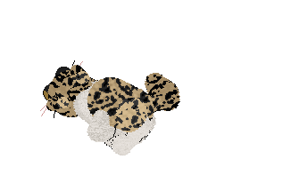
| Prev << |  | Next >> |
| << Random >> |
Event Log
[ 2020 ]
December
Whiskerwick Winter Hexing Contest
2020 Whiskerwick Advent Calendar
2020 New Year's Eve Slumber Party
2020 Whiskerwick Advent Calendar
2020 New Year's Eve Slumber Party
[ 2021 ]
January
February
March
April
May
December
February
March
April
May
Foster A Mom Mother's Day Challenge
Photo A Day Challenge
Hexed Beanie Baby Contest
Petzcord Mother's Day Adoption Event
Photo A Day Challenge
Hexed Beanie Baby Contest
Petzcord Mother's Day Adoption Event
December
[ 2022 ]
April
Find-It
Mascot Series [ 2 ]
Why does my cat walk around like he owns the place?
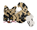
Photobook
Rugosa [ 220508 ]
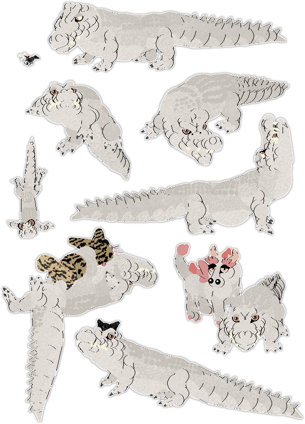
Photobook - Past Updates
Obnoxiously Cute [ 220428 ]
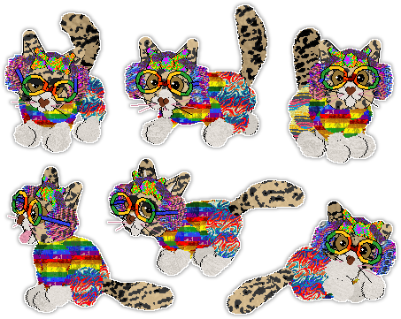
Shimmer OOTD [ 220420 ]
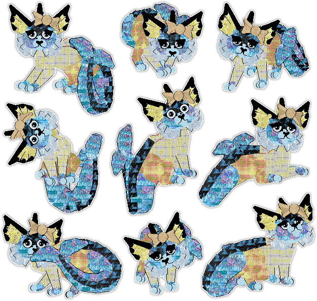
Introductions [ 220402 ]
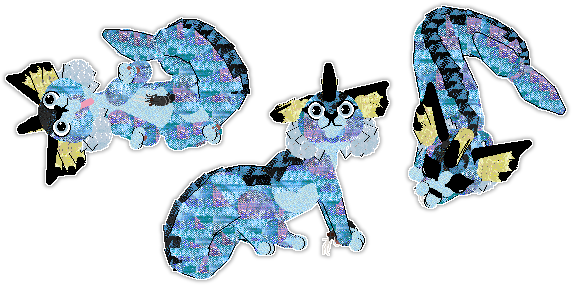
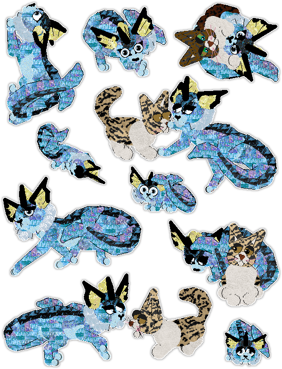
Shimmer [ 220401 ]
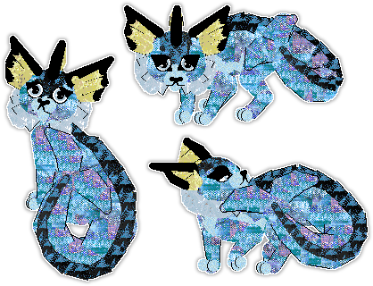
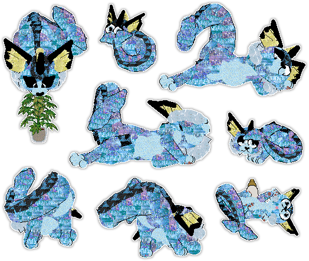
Mind Control Bunnies [ 220324 ]
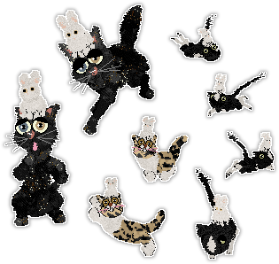
Siren OOTD [ 220316 ]
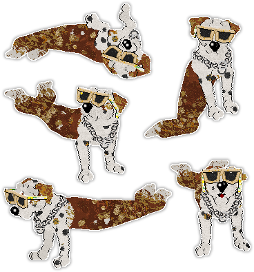
Charcoal [ 220309 ]
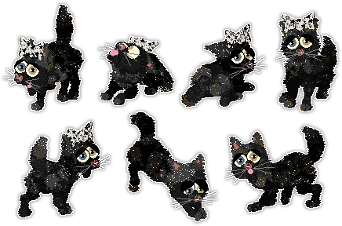
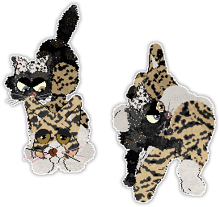
Akapya [ 220216 ]
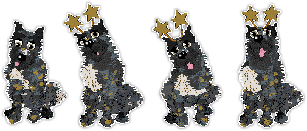
Éclair & Paypaya OOTD [ 220115 ]
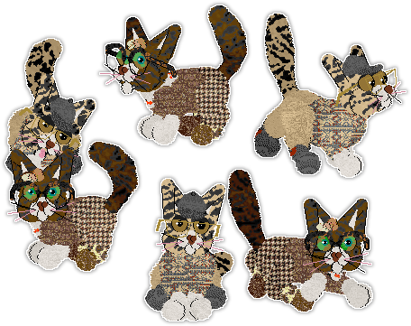
2021 New Year's Eve Slumber Party [ 211231 ]
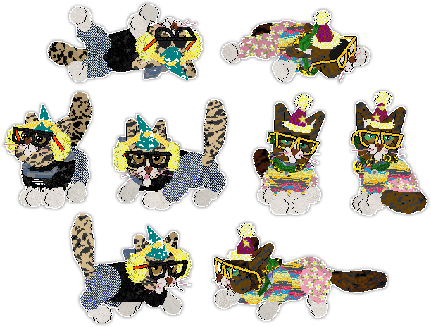
Not A Fan [ 211228 ]
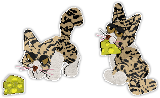
More Holiday Spirit [ 211216 ]
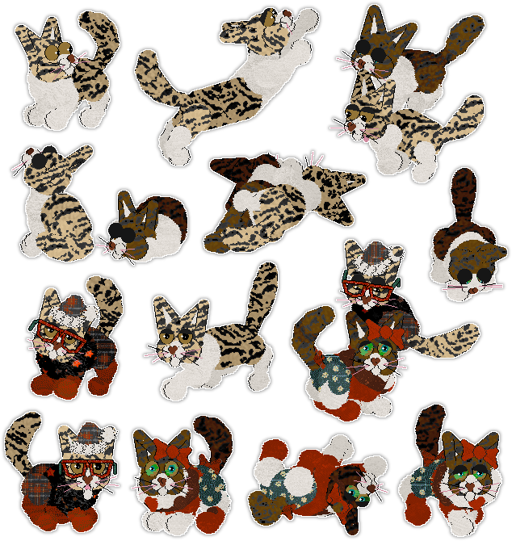
Holiday Spirit [ 211207 ]
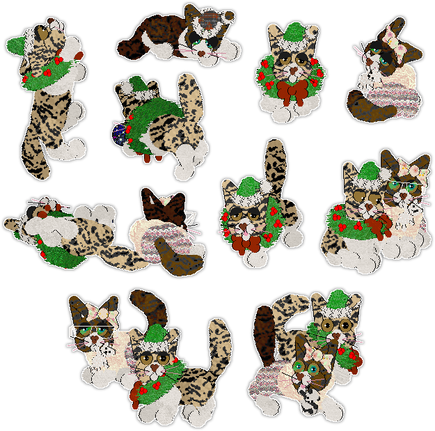
Tape [ 210219 ]
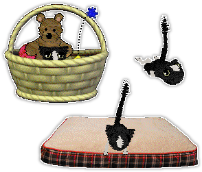
Hmmm... [ 210215 ]
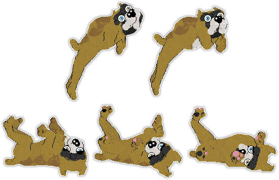
Her Favorite Show [ 210214 ]
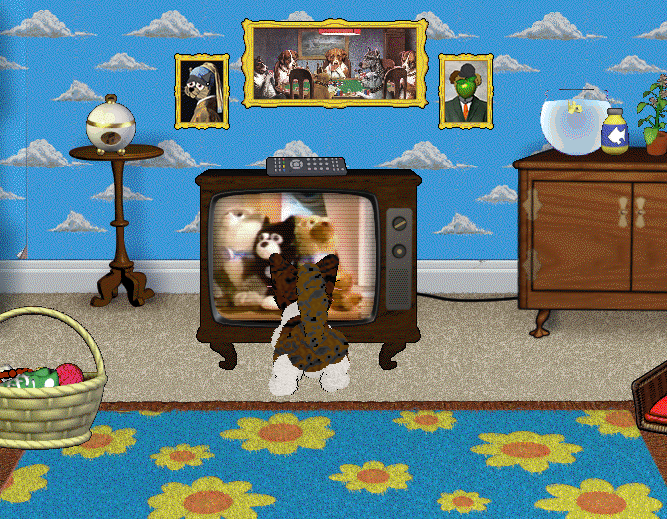
2020 New Year's Eve Slumber Party [ 201231 ]
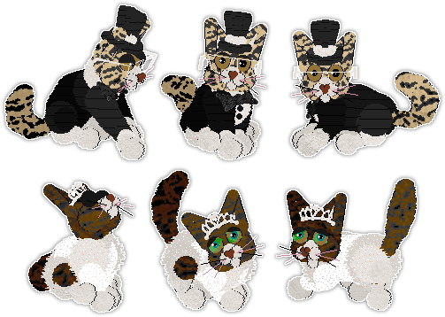
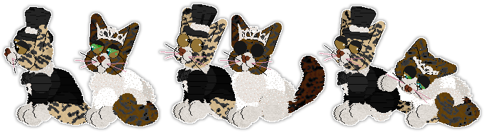
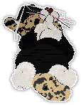
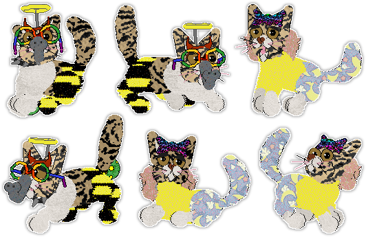
Sevan [ 201214 ]
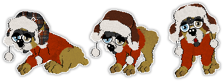
Three Years of Éclair [ 2020-2022 ]
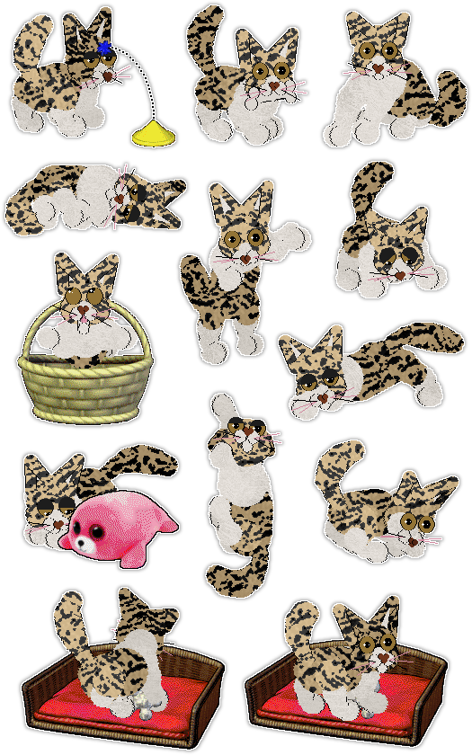
Great Pyrenees
Cirrutopia v.5 Great Pyrenees
I use the non-overwriting CIR Great Pyrenees V5.dog file.
These dogz are naturally raised, purebred and non-inbred.
I use the non-overwriting CIR Great Pyrenees V5.dog file.
These dogz are naturally raised, purebred and non-inbred.
First Generation
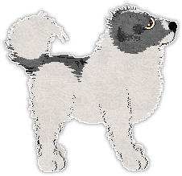 |
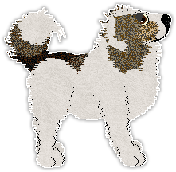 |
|---|---|
Chanel♀First Generation[ 210318 ] |
Armani♂First Generation[ 210318 ] |
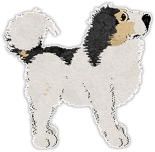 |
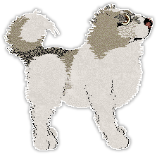 |
|---|---|
Prada♀First Generation[ 210407 ] |
Hermes♂First Generation[ 210407 ] |
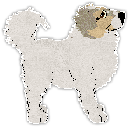 |
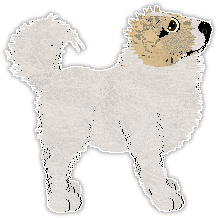 |
|---|---|
Camille♀First Generation[ 210531 ] |
Etienne♂First Generation[ 210531 ] |
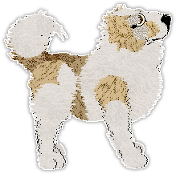 |
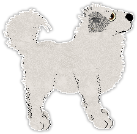 |
|---|---|
Sphene♀First Generation[ 210531 ] |
Odilon♂First Generation[ 210531 ] |
Second Generation
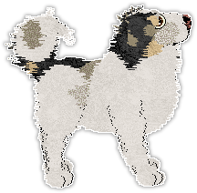 |
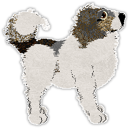 |
|---|---|
Bijou♀Prada x Hermes[ 210420 ] |
Cyrille♂Chanel x Armani[ 210515 ] |
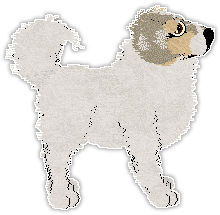 |
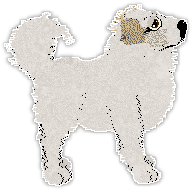 |
|---|---|
Aveline♀Camille x Etienne[ 210620 ] |
Lothaire♂Sphene x Odilon[ 210611 ] |
Third Generation
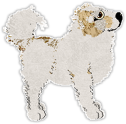 |
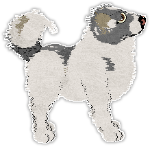 |
|---|---|
Therese♀Aveline x Lothaire[ 210628 ] |
Alphonse♂Bijou x Cyrille[ 210604 ] |
Fourth Generation
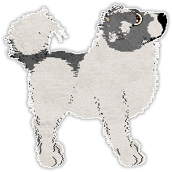 |
|---|
Yves♂Terese x Alphonse[ 210713 ] |
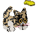
Breeding Requests
I'm always open for OB breeding requests!
I don't have a crew page for you to browse since I have far too many petz to list out. I'm fairly confident in my ability to breed just about anything though, so you can tell me what breed(s)/colors/etc. you're after and I'll give it my best shot.
You can see a list of the specific files I use here.
My Wislist
These are just a few things I'm always willing to trade for if you want to offer something in exchange. Feel free to make a request even if you have nothing to offer though, I'd be happy to breed you something at no cost!
★★★★★ Custom Character Hex - Dwaekki
★★★☆☆ OB Purebreds - any breed, preferably non-inbred with symmetrical tree
★☆☆☆☆ OB Mixies - any breed, inbreeding status doesn't matter
★☆☆☆☆ Hexies/Brexies - I'm a bit selective when it comes to hexed petz
★★★☆☆ OB Purebreds - any breed, preferably non-inbred with symmetrical tree
★☆☆☆☆ OB Mixies - any breed, inbreeding status doesn't matter
★☆☆☆☆ Hexies/Brexies - I'm a bit selective when it comes to hexed petz
Contact Me
Discord - quickest and easiest, you can DM me if we share a server
Email - crushpetzing@gmail.com
Forums - Whiskerwick & RKC
Marketplaces - PUGs & TFM
Email - crushpetzing@gmail.com
Forums - Whiskerwick & RKC
Marketplaces - PUGs & TFM
OB File Set
I always have a few overwrites in my game that suit my own tastes but I try to make sure they don't alter the base genetics too much (in my opinion). I'm less strict about P5 breeds because the original files were already broken AF so in their case I just use whatever looks best to me. Unless otherwise noted all of my petz are naturally bred without brexing or genexing and will carry the genetics they show, the only exception being the occasional fluke eye color mutation.
P4 Dogz
Bulldog - original
Chihuahua - original
Dachshund - original
Dalmatian - 2nd Gen Eye Size OW from CRUSHING
Great Dane - original
Labrador - original
Mutt - original
Poodle - original
Scottie - original
Sheepdog - Eye Size OW from Cargo
P5 DogzChihuahua - original
Dachshund - original
Dalmatian - 2nd Gen Eye Size OW from CRUSHING
Great Dane - original
Labrador - original
Mutt - original
Poodle - original
Scottie - original
Sheepdog - Eye Size OW from Cargo
My P5 dog breeds are the non-unibreed P4 conversions from Kizmet with varied personalities. I use the cat-like Papillon and my own edited version of the German Shepherd that fixes the tail tip marking.
P4 Catz
Alley Cat - Mostly Flealess OW from Kizmet
B+W Shorthair - original
Calico - original
Chinchilla Persian - original
Maine Coon - original
Orange Shorthair - Kitten Pupil Size OW from Swallowtail
Persian - original
Russian Blue - 2nd Gen Pupil Size OW from Reverie (converted to non-unibreed)
Siamese - Ear Marking OW from Polygondwanaland
Tabby - original
P5 CatzB+W Shorthair - original
Calico - original
Chinchilla Persian - original
Maine Coon - original
Orange Shorthair - Kitten Pupil Size OW from Swallowtail
Persian - original
Russian Blue - 2nd Gen Pupil Size OW from Reverie (converted to non-unibreed)
Siamese - Ear Marking OW from Polygondwanaland
Tabby - original
My P5 cat breeds are the non-unibreed P4 conversions from Kizmet.
Mixie Showroom Archive
This is an archive for all of the OB mixies I've shown. I rarely show mixies these days but I wanted to preserve the career info of the few that I have, so here they are! If you're looking for my Great Pyrenees show info, links to their individual rooms can be found on the Pyrs page.
Dogz
Citrus
Hylic
Meltdown
Mousse
Teddy
Artemisia
Aster
Anther
Gambit
Hellebore
Ifrit
Magnolia
Doodle
Naberius
Nix
Amarok
Loreli
Torque
Faroe
Pillow
CatzHylic
Meltdown
Mousse
Teddy
Artemisia
Aster
Anther
Gambit
Hellebore
Ifrit
Magnolia
Doodle
Naberius
Nix
Amarok
Loreli
Torque
Faroe
Pillow
✦ C I T R U S ✦
CRUSHING's Concentrated Power Of Will
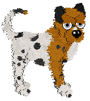
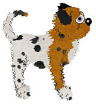
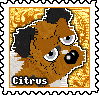
✦ P O S E S H O W S ✦
Supreme Grand Champion[ 37 points ]
✦ A W A R D S ✦
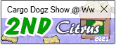
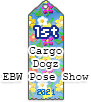
✦ H Y L I C ✦
CRUSHING's Prima Materia
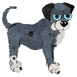
✦ P O S E S H O W S ✦
Supreme Grand Champion[ 33 points ]
✦ A W A R D S ✦
✦ M E L T D O W N ✦
CRUSHING's Allegro Agitato
✦ P O S E S H O W S ✦
Supreme Grand Champion[ 33 points ]
✦ A W A R D S ✦
✦ M O U S S E ✦
CRUSHING's Delicious Air
✦ P O S E S H O W S ✦
Supreme Grand Champion[ 37 points ]
✦ A W A R D S ✦
✦ T E D D Y ✦
Rho/CRUSHING's Pocket For Corduroy
✦ P O S E S H O W S ✦
Supreme Grand Champion[ 30 points ]
✦ A W A R D S ✦
✦ A R T E M I S I A ✦
Bec/CRUSHING's Serving Serval
✦ P O S E S H O W S ✦
Supreme Grand Champion[ 38 points ]
✦ A W A R D S ✦
✦ A S T E R ✦
CPC/CRUSHING's Ryuusei Blade
✦ P O S E S H O W S ✦
Supreme Grand Champion[ 34 points ]
✦ A W A R D S ✦
✦ A N T H E R ✦
Rho/CRUSHING's Lightly Dusted
✦ P O S E S H O W S ✦
Supreme Grand Champion[ 33 points ]
✦ A W A R D S ✦
✦ G A M B I T ✦
CRUSHING's Pawn to D4
✦ P O S E S H O W S ✦
Supreme Grand Champion[ 33 points ]
✦ A W A R D S ✦
✦ H E L L E B O R E ✦
Funfetti/CRUSHING's Cross Pollination
✦ P O S E S H O W S ✦
Supreme Grand Champion[ 34 points ]
✦ A W A R D S ✦
✦ I F R I T ✦
CRUSHING's Crimson Howl
✦ P O S E S H O W S ✦
Supreme Grand Champion[ 36 points ]
✦ A W A R D S ✦
✦ M A G N O L I A ✦
CRUSHING's Cretaceous Bloom
✦ P O S E S H O W S ✦
Supreme Grand Champion[ 44 points ]
✦ A W A R D S ✦
✦ D O O D L E ✦
CRUSHING's Sketchy Business
✦ P O S E S H O W S ✦
Supreme Grand Champion[ 41 points ]
✦ A W A R D S ✦

✦ N A B E R I U S ✦
JZ/CRUSHING's Infernal Affairs
✦ P O S E S H O W S ✦
Ultimate Grand Champion[ 54 points ]
✦ A W A R D S ✦
✦ N I X ✦
CRUSHING's Dark Mother
✦ P O S E S H O W S ✦
Supreme Grand Champion[ 38 points ]
✦ A W A R D S ✦
✦ A M A R O K ✦
CRUSHING's Don't Try To Hide
✦ P O S E S H O W S ✦
Master Grand Champion[ 25 points ]
✦ A W A R D S ✦
✦ L O R E L I ✦
CRUSHING's Full Of Love
✦ P O S E S H O W S ✦
Supreme Grand Champion[ 34 Points]
✦ T O R Q U E ✦
Moon Lake/CRUSHING's Moment Of Force
✦ P O S E S H O W S ✦
Supreme Grand Champion[ 34 points ]
✦ F A R O E ✦
CRUSHING's Opening Act
✦ P O S E S H O W S ✦
Supreme Grand Champion[ 39 points ]
✦ A W A R D S ✦
✦ G E N I E ✦
CRUSHING's Wish Come True


✦ P O S E S H O W S ✦
No Pose Title[ 5 points ]
✦ P I L L O W ✦
CRUSHING's One Thousand Thread Count
✦ P O S E S H O W S ✦
Supreme Grand Champion[ 38 points ]
✦ A W A R D S ✦
✦ M I L K W E E D ✦
Mos Eisley/CRUSHING's Food For Monarchs
✦ P O S E S H O W S ✦
Supreme Grand Champion[ 35 points ]
✦ A W A R D S ✦
✦ L U P I N E ✦
CRUSHING's Wolfy Legume
✦ P O S E S H O W S ✦
Supreme Grand Champion[ 37 points ]
✦ T R I C K S H O W S ✦
No Trick Title[ 9 points ]
✦ A W A R D S ✦
✦ R O A N ✦
CRUSHING's Rolling Kick
✦ P O S E S H O W S ✦
Supreme Grand Champion[ 36 points ]
✦ T R I C K S H O W S ✦
No Trick Title[ 5 points ]
✦ A W A R D S ✦
✦ S I A V A S H ✦
CRUSHING's Heavens Above
✦ P O S E S H O W S ✦
Supreme Grand Champion[ 34 points ]
✦ A W A R D S ✦
✦ O N C E ✦
CRUSHING's Copy Machine
✦ P O S E S H O W S ✦
Supreme Grand Champion[ 35 points ]
✦ A W A R D S ✦
✦ P I N E C O N E ✦
Mos Eisley/CRUSHING's Coniferous Feline
✦ P O S E S H O W S ✦
Supreme Grand Champion[ 31 points ]
✦ A W A R D S ✦
✦ J E N O A H ✦
Sugarmice/CRUSHING's Diamond Gold
✦ P O S E S H O W S ✦
Supreme Grand Champion[ 38 points ]
✦ A W A R D S ✦
✦ A R M A N I ✦
CRUSHING's Bella Figura
✦ P O S E S H O W S ✦
Supreme Grand Champion[ 44 points ]
✦ A W A R D S ✦
✦ C H A N E L ✦
CRUSHING's Parisian Chic
✦ P O S E S H O W S ✦
Supreme Grand Champion[ 30 points ]
✦ A W A R D S ✦
✦ H E R M E S ✦
CRUSHING's Herald Of The Dogs
✦ P O S E S H O W S ✦
Supreme Grand Champion[ 40 points ]
✦ A W A R D S ✦
✦ P R A D A ✦
CRUSHING's Belle Femme
✦ P O S E S H O W S ✦
Supreme Grand Champion[ 31 points ]
✦ A W A R D S ✦
✦ B I J O U ✦
CRUSHING's Big Girls Need Big Diamonds
✦ P O S E S H O W S ✦
Supreme Grand Champion[ 37 points ]
✦ A W A R D S ✦
✦ S P H E N E ✦
CRUSHING's Rare Earth Element
✦ P O S E S H O W S ✦
Supreme Grand Champion[ 30 points ]
✦ A W A R D S ✦
✦ C Y R I L L E ✦
CRUSHING's Master Of The Bump
✦ P O S E S H O W S ✦
Supreme Grand Champion[ 31 points ]
✦ A L P H O N S E ✦
CRUSHING's Armored Alchemist
✦ P O S E S H O W S ✦
Champion[ 18 points ]
✦ A W A R D S ✦
Stamps
Stamp concept and template are courtesty of Lu @ Beatnik.
Freebies
PUGs Exclusive Stamps
Trading Cards
Nightshade's Petz has an explanation and template on their site,
and another template can be found at Litterz Factory.
Freebies
Show Awards
The template I use is from Litterz Factory.
Hexed Breeds
✦ Rude Houseguest ✦
[ Calico + P4 Non-Unibreed + OW & Non-OW + Base ]
DOWNLOAD
✦ Pierre & Icy ✦
[ Labrador + P4 Non-Unibreed + OW & Non-OW ]
Texture folder goes in Resource\Dogz
DOWNLOAD
Overwrites
Feel free to convert them or paste their LNZ over a P5 breedfile if you like.
✦ Dalmatian Eye Size Overwrite ✦
DOWNLOAD
✦ German Shepherd Tail Overwrite ✦
This overwrite fixes the GSD tail so it inherits the Mutt tail tip marking
correctly. The base I used is the varied personality GSD from Kizmet.
DOWNLOAD
American Bulldog
"The American Bulldog is a powerful, athletic short-coated dog, strongly muscled, and well boned. The body is just slightly longer than tall. The head is large and broad, with a wide muzzle. Ears are small to medium in size, high set, and may be drop, semi-prick, rose, or cropped. The tail may be docked or natural. The American Bulldog comes in solid colors, white with colored patches, and brindle." - UKC
Head: Bulldog only
Body: Dachshund only
Ears: Dalmatian preferred, Scottie accepted
Legs: Mutt only
Feet: Mutt only
Tail: Dalmatian preferred, Scottie or Bulldog accepted
Eye Color: Any accepted
Coat Colour: Any accepted
Coat Type: Any except Poodle, Scottie, or Sheepdog
Markings: Chihuahua boots and chest patch preferred, any accepted
Size: Any accepted
Personality: Bulldog preferred, any but Poodle accepted
Schnauzer
"The Standard Schnauzer is a robust, heavy-set dog, sturdily built with good muscle and plenty of bone; square-built in proportion of body length to height. His rugged build and dense harsh coat are accentuated by the hallmark of the breed, the arched eyebrows and the bristly mustache and whiskers." - AKC
Head: Scottie only
Body: Dalmatian only
Ears: Sheepdog, Dalmatian, Scottie, or Great Dane
Legs: Poodle only
Feet: Sheepdog only
Tail: Mutt, Poodle, or Scottie
Eye Color: Any accepted
Coat Colour: Any accepted
Coat Type: Scottie preferred, Poodle accepted
Markings: Any accepted
Size: Any accepted
Personality: Any except Poodle
✦ Sauerkraut & Schnitzel ✦
DOWNLOAD
Gytrash
"The Gytrash, a legendary black dog known in northern England, was said to haunt lonely roads awaiting travellers. Appearing in the shape of horses, mules, or dogs, the Gytrash haunt solitary ways and lead people astray. They are usually feared, but they can also be benevolent, guiding lost travellers to the right road." - Definitions.net
Head: Sheepdog only
Body: Great Dane only
Ears: Chihuahua only
Legs: Great Dane only
Feet: Sheepdog only
Tail: Scottie or Sheepdog
Eye Color: Any accepted
Coat Colour: Black preferred, any accepted
Coat Type: Any accepted
Markings: Any accepted
Size: Any accepted
Personality: Any accepted
✦ Freybug & Hairy Jack ✦
DOWNLOAD
Gray Wolf
"Gray wolves, or timber wolves, are canines with long bushy tails that are often black-tipped. Their coat color is typically a mix of gray and brown with buffy facial markings and undersides, but the color can vary from solid white to brown or black." - NWF
Head: Dachshund only
Body: Labrador only
Ears: Scottie only
Legs: Labrador only
Feet: Labrador only
Tail: Sheepdog (long) only
Eye Color: Any accepted
Coat Colour: Any accepted
Coat Type: Poodle or Scottie
Markings: Chihuahua and/or Mutt
Size: Any accepted
Personality: Any accepted
✦ Geri & Freki ✦
DOWNLOAD
Veblen Meezer
A Veblen good is a kind of luxury good for which demand increases as the price rises.
Head: Siamese only
Body: Siamese only
Ears: Chinchilla Persian or Persian
Legs: Siamese only
Feet: Siamese only
Tail: Chinchilla Persian or Persian
Eye Color: Any accepted, White eyelids preferred, Black eyelids accepted
Coat Colour: White base coat only, any point color accepted
Coat Type: Siamese only, white whiskers preferred
Markings: Alley Cat patches required, grey Alley muzzle is faulted, B+W Shorthair patches optional but desireable
Size: Any accepted
Personality: Siamese preferred, Chinchilla Persian or Persian accepted
✦ Tiffany & Fendi ✦
DOWNLOAD
Wallpapers
Here are a few custom wallpapers for your Playpen. None of these will tile, but all are 1920x1080 so they should look fine maximized at that resolution. Images are sourced from free-images.com.
DOWNLOAD
Textures
✦ Star Foil Set ✦
Made from Pokémon card holosheets
DOWNLOAD
Random Name Hotkey
You can use this script in conjunction with the Jewellz hotkeys to quickly name offspring while breeding. Family trees look much nicer filled with proper names rather than keysmashes, and those pesky repeat name warnings are no longer a problem (you can still occasionally get repeat names but it's easy enough to hit the hotkey again to randomize a new name).
To run the script you need to have AutoHotkey installed, and for it to work properly you have to run it as Administrator, otherwise it won't be able to paste text in the Petz window. The default hotkey is ALT+A. Right click > Edit Script to edit it with Notepad. You can add or remove names from the list, change the hotkey, or comment out the SendInput line to manually enter the name if you prefer. Save the document and reload the script to update it.
DOWNLOAD
Non-Inbred Tree Spreadsheet
This is a spreadsheet for planning full pedigree (8th gen) non-inbred lines. It's in .xlsx format so you can import it into Google Sheets, Excel, or OpenOffice Calc, but was made for Sheets specifically so you may run into formatting issues in other programs.
DOWNLOAD
There are four 6th gen sets divided into two 5th gen blocks each. The left side is the 7th gen father's tree and the right side is the mother's (hence Block1F for father, Block1M for mother etc.) The blue and pink colors denote male and female petz.
Petz Palette Color Set
This is a Color Set for Clip Studio Paint. Colors are taken from the Petz palette included with Pastylabz. To import, just drag and drop the file into your Color Set window.
DOWNLOAD
A
AC - Adoption Center
Addball - Additional ballz added to the base ballz of a pet or breedfile, most often for ears and other body parts.
B
Babyz - A game developed by PF. Magic where you care for virtual babies.
Ballz - The 2D circles that make up the body of a pet.
BMP - An image file format. All image assets in Petz are BMPs. Sometimes synonymous with texture.
Brainsliders - A menu in PetzA that lets you adjust the energy level, hunger, age, and so on of your petz.
Breedfile - A file with a .dog or .cat extension, found in the Resource\Dogz or Resource\Catz folders. These are what generate .pet files when you select a breed from the Adoption Center.
Breed true - A pet breeds true when both of their gene sets (viewable with Genepoolz) are identical, so all of the offspring they produce look exactly or nearly exactly like them.
Brexing - Hexing a bred pet.
Bullie - Bulldog
BW / BWSH - B+W Shorthair
C
Cali - Calico
Call name - The everyday name of a pet, as opposed to their show name.
Ch / Champion - A pose show title earned at 30 points.
Chi - Chihuahua
Chinchi - Chinchilla Persian
Crew - A personal collection of petz.
D
Dachie - Dachshund
Dali - Dalmatian
Dali pose - The front-facing dogz pose. Named for the Dalmatian, who is regarded as looking the best in this type of pose.
Dane - Great Dane
Dane pose - The profile or side-facing dogz pose. Named for the Great Dane, who is regarded as looking the best in this type of pose.
E
External texture - A custom fanmade texture that has to be manually added to the game, as opposed to an internal texture which is included with the base game.
F
Filmstrip - The individual frames of animation of a toy or clothes file.
First gen / First generation pet - A pet adopted from the Adoption Center. "First generation" refers to the fact that these petz have no parents listed in their family tree. Sometimes abbreviated to G1.
Floofer - A cat with 0 Acrobaticness. As with trotting in dogz, floofers will typically fall down rather than land on their feet when dropped.
Floppy - A dog with floppy ears.
Flux - Using the program PetFlux to make a Petz 5 pet backwards compatible with Petz 3 or 4.
Furfile - A BMP texture that resembles fur.
Freebie - A pet for adoption that you don't have to pay or trade for.
G
GCh / Grand Champion - A pose show title earned at 15 points.
Genepoolz - A program made by Reflet that shows what visual traits a pet carries and can pass on to offspring.
Genex / Genexing - Gene hexing, ususally done to make a pet breed true for certain visual or personality traits.
Goal descriptors - The 22 programmed personality traits that determine certain behaviors in petz. Can be viewed with the Goal Descriptor Analyzer.
Goal Descriptor Analyzer - A program made by Reflet that shows what values a pet carries for their personality traits.
GS / GSD - German Shepherd or German Shepherd Dog, a dog breed introduced in Petz 5.
H
Halfie - The two-tone Sheepdog coat.
HB / Honey Bear - A cat breed introduced in Petz 5.
Hexing - Modding. Modded files are referred to as being hexed, such as a hexed breed or hexed pet. The term originates from the fact that early modding was done using hex editors.
Hexing base - A breedfile that serves as a template to hex on.
Hexed lineage - When a pet has hexed ancestors.
Hexie - A hexed pet.
Hex painting - Editing the colors or textures of a pet or hexing base.
Hound - A selective breed named by Doc @ Samhain. These are Great Danes with Dalmatian ears.
I
Inbreeding - Inbreeding refers to beeding petz that are related to each other. Any amount of inbreeding no matter how distant will cause the game to register a pet as inbred. Inbreeding has no affect on gameplay.
Internal texture - A texture that came with the base game, as opposed to an external texture which is fanmade and has to be added to the game manually.
J
JB - Japanese Bobtail
JRT - Jack Russel (Terrier), a dog breed introduced in Petz 5.
L
Linez - The 2D lines in between ballz that connect them together.
LNZ - The plaintext code in a breed or pet file.
LnzLive - A program created by Mnemoli for editing pet files that combines a visual editor with a plaintext code editor.
LNZ Pro - A program created by Nicholas Sherlock for editing Petz resources, including pet files, breeds, toyz, and more.
M
Meez / Meezer - Siamese
MGCh / Master Grand Champion - A pose show title earned at 20 points.
Mindscape - A former subsidary of The Learning Company and publisher of Petz 4 and Babyz.
Mixie - Mixed breed pet.
MPC / Meezer Pointed Calico - A selective breed named by Tiffany @ Sprocket. These are Calicos with a Siamese coat.
MPA / My Petz Adoption / My Personal Adoption - Adopting out a pet that is special in some way, such as a pet you adopted that you aren't allowed to delete, or a pet you bred or hexed yourself that was a former member of your crew.
MC - Maine Coon
N
NIB / Non-inbred - Petz that are not inbred.
Non-OW / Non-overwriting - A hexed breed/toy/etc. that does not have the same ID as one of the original files included with the game, so it can be in the game at the same time as all of the other files. Can also be applied to hexed files that do not overwrite other hexed files.
NR / Naturally raising - Caring for petz without the use of PetzA.
O
Oshie / OSH - Orange Shorthair
Oddballz - Another virtual pet game developed by PF. Magic where you care for fantasy pets.
Original breed - A breed that came with the base game, as opposed to a hexed breed.
Overpose - An animation that only dogz do where their body parts look stretched, broken, or otherwise exaggerated.
OW / Overwrite - A hexed breedfile, toy, clothes file, or playscene that has the same ID as one of the original files included with the game. Can also refer to hexed files that overwrite another hexed file.
P
.pet file - The file of a pet adopted from the Adoption Center or bred from existing petz. These can be found in the Adopted Petz folder.
Paintball - A type of marking on a pet. The spots on a Dalmatian are an example of paintballs. Also referred to as patches in some instances.
Pastylabz - A program created by Yakrell that can turn an image into a copy-pasteable paintball code.
Patch - A type of paintball marking on a pet, mostly commonly used to refer to the Mutt paintball markings.
Patchwork - A selective breed named by Hannikat. These are Calicos with one jowl, ankle, and tail marking of the same color.
PC - Petz Community
PetzA - An addon for Petz and Babyz that turns the demo into the full game, fixes various bugs and adds a number of quality-of-life features.
PetFlux - A program created by Reflet that can make Petz 5 petz backwards compatible with Petz 3 and 4.
PF. Magic - Developer of the original four Petz games, Babyz, and Oddballz. Said to stand for Pure Fucking Magic.
POTL / Pick of the litter - Someone's favorite puppy or kitten in a litter.
PKC / Petz Kennel Club - A community for showing Petz based on real life breed standards and rules.
Poodle pose - Special sitting pose that only dogz with Poodle personalities will perform. Has a front and profile variant.
Pose / Show pose - A specific pose that catz and dogz sometimes do when you take pictures of them with the ingame camera.
Pose show - A show where you submit a picture of your pet posing to be judged by the show host.
Prefix - The name of the original breeder or hexer of a pet that is added before their show name.
PWS / Pet Workshop - A visual editor used to mod breedfiles.
R
RB - Russian Blue
Rc / Rch / Reserve Champion - A pose show title earned at 5 points.
S
SB / Selective breed - A fanmade dog or cat breed that is created through selectively breeding for certain traits.
SCP - The portion of a breedfile that controls certain animations.
Second gen / Second generation pet - A pet bred from two first generation petz.
SGCh / Supreme Grand Champion - A pose show title earned at 30 points. It' i's common for showgoers to retire their petz once they reach SGCh.
Sheepie - Sheepdog
Showing - A community activity where you submit an image of your pet performing some action such as posing or doing tricks to be judged by a show host. The goal of most shows are to earn points and titles.
Show name - A special name given to a pet for use in showing. Similar to registered names used for real life show dogs, these names can be pretty much anything, but are most commonly a short phrase relating to the appearance or everyday name of the pet.
Siamese pose - Special sitting or stretching pose that only catz with Siamese personalities do.
Sleepy sickness - A behavior that catz and dogz display at 80 to 100 Kindness. Petz with sleepy sickness will fall asleep when picked up.
Studio Mythos - The developer of Petz 5.
Suffix - Similar to a prefix, this is the name of the original breeder or hexer of a pet that is added after their show name, typically formatted as "Show Name of/at Suffix."
T
Tamsin - A selective breed named by Star @ Starswept, after the book Tamsin by Peter S. Beagle. These are traditionally dogz with fully Dalmatian body parts and Mutt patches. Tamsins can now have different types of ears, coats, or tails, but they must have a Dali head, body, and legs and Mutt patches.
Texture - A BMP image of fur or some other pattern that is applied to ballz. The curly hair of a Scottie and the stripes of a Tabby are examples of textures. Also known as a furfile when they resemble fur.
The Learning Company - A company that acquired PF. Magic in 1998, and later sold their entertainment division to Ubi Soft in 2001.
Tinker - A program made by Nicholas Sherlock for editing toy files, clothes on-shelf graphics, and other filmstrips.
Title - Earned by petz once they've accumulated a certain amount of points from placing in shows.
Trickster - A cat with 100 Dogginess that can do tricks for treatz.
Trotter - A dog with 0 Acrobaticness. Trotters will walk with a special gait known as trotting and will fall to the bottom of the screen when you pick them up and drop them.
U
Ubi Soft / Ubisoft - The company that currently owns all PF. Magic-produced titles, including Petz, Babyz, and Oddballz.
Unibreed - A breedfile that can work in Petz 3, 4, and 5.
V
Variations - The various unique "looks" that first generation petz can have.
Velveteen - A selective breed named by Delighy @ Aniseed. These are B+W Shorthairs with a Persian personality.
W
Wildz - A pet or breed that was hexed to look like a wild animal, such as a lion or bird.
Miscellaneous Resources
What is Petz?
Petz is a series of virtual pet sims from the 90s, originally developed and published by a company called PF. Magic. The premise is simple: you adopt virtual cats and dogs, play with them, feed them, raise them to adulthood, and breed them. The games are uniquely stylized by rendering 2D assets called "ballz" and "linez" into 3D-like animations. Fans of the series realized that the base game files could be modified in a hex editor to create new breeds, toys, and more, leading to the proliferation of modding or "hexing" in the community.
All PF. Magic properties were aquired by Ubi Soft in 2001. After the release of Petz 5 in 2002, Ubi Soft abandoned the PC games and began using the Petz brand name to localize unrelated Japanese DS and 3DS titles in the West. However, as of 2022 the original PC Petz Community is still alive and well. There's an ongoing initiative via the Petz Community Census to obtain the source code from Ubisoft so even more complex modding will be possible, and to hopefully extend the lifespan of this now precariously dated software far into the future.
If you'd like to dive deeper into the history of Petz, give this video a watch:
Further Reading
From The Source
Petz Demo Video, 1998
About PF. Magic
How The Night Trap Led To Petz
Should Virtual Petz Die?
Socially Intelligent Virtual Petz
Creating Emotional Relationships With Virtual Characters
Multiple Character Interaction Between Believable Characters
Blogs & ArticlesAbout PF. Magic
How The Night Trap Led To Petz
Should Virtual Petz Die?
Socially Intelligent Virtual Petz
Creating Emotional Relationships With Virtual Characters
Multiple Character Interaction Between Believable Characters
Lost to Time: Gaming's Forgotten Petz Subculture
Petz: A lost community of mostly women coders/gamers
Ballz & Linez: Remembering the Golden Age of Petz Hexing
Petz wouldn't exist without Night Trap
3D as 2D - linez and petz
For The Love of Virtual Pets
KittyCatz & PuppyDogz
Petz: A lost community of mostly women coders/gamers
Ballz & Linez: Remembering the Golden Age of Petz Hexing
Petz wouldn't exist without Night Trap
3D as 2D - linez and petz
For The Love of Virtual Pets
KittyCatz & PuppyDogz
Which version should I play?
If you are brand new to Petz, my suggestion is to start with Petz 4. It's the most popular game in the community so most mods are made specifically for it. Individual petz and breeds can be made cross-compatible with any version, but toyz, clothes, and playscenes can't be easily converted, so 4 is your best bet if you want to try out all of that cool custom content right away. Every game in the series is well worth playing however, so if you find that you really enjoy Petz 4 certainly give the others shot as well, including the spinoffs Babyz and Oddballz.
NOTE: Most downloads will need to be unzipped with a file archiver before they can be used. I recommend 7-Zip but anything that can unzip a .zip or .rar will do.
DOWNLOAD PETZ 4
This version of Petz 4 is portable and comes pre-patched with PetzA, a mod that turns the demo into the full game and adds a number of quality-of-life features. You won't need to install anything - simply extract the .zip to any folder except Program Files and run the .exe as Administrator.
DOWNLOAD THE OTHER GAMES
Mazzew provides portable downloads and instructions for every game in the series, including Petz 5, Babyz, and Oddballz. You can also find installers on Acid Trip.
What about custom breeds/toys/clothes/etc?
If you want to add more content to your game there are plenty of fanmade assets available to download for free. Creators typically host their files on their own personal websites. See the following directories for links:
Any files you download will need to be placed in the correct folder for it to appear in-game.
Pet files (.pet) go in the Adopted Petz folder. On a fresh install you'll need to adopt a pet from the Adoption Center for this folder to appear, or you can create it yourself.
Breed files (.cat or .dog) go in Resource\Catz and Resource\Dogz respectively.
Clothes files (.clo) go in Resource\Clothes.
Toy files (.toy) go in Resource\Toyz.
Playscene files (.env) go in Resource\Area.
Music box songs should be in .wav format and go in Resource\Songz.
Playpen wallpapers should be in 8-bit .bmp (256 Color Bitmap) format and go in Resource\Wallpaper.
Breed files (.cat or .dog) go in Resource\Catz and Resource\Dogz respectively.
Clothes files (.clo) go in Resource\Clothes.
Toy files (.toy) go in Resource\Toyz.
Playscene files (.env) go in Resource\Area.
Music box songs should be in .wav format and go in Resource\Songz.
Playpen wallpapers should be in 8-bit .bmp (256 Color Bitmap) format and go in Resource\Wallpaper.
How do I join the community?
Forums
RKC Petz Forum - General Petz forum.
Whiskerwick - General Petz forum, has a currency called Bones.
Petz Kennel Club - For showing petz based on realistic standards.
Duke's Group - For naturally raising petz.
Seeing Stars - For Petz horses.
Discord ServersWhiskerwick - General Petz forum, has a currency called Bones.
Petz Kennel Club - For showing petz based on realistic standards.
Duke's Group - For naturally raising petz.
Seeing Stars - For Petz horses.
Petzcord - Very active general Petz Discord.
Hexers HQ - Dedicated hexing server. Posting an introduction is required.
The Breeders Society - Dedicated breeding server.
The Petz Archival Collaborative - For preserving files and community history.
Petz Hacking & Modding - For anyone interesting in Petz programming.
The Flea Market - Support server for The Flea Market website.
MarketplacesHexers HQ - Dedicated hexing server. Posting an introduction is required.
The Breeders Society - Dedicated breeding server.
The Petz Archival Collaborative - For preserving files and community history.
Petz Hacking & Modding - For anyone interesting in Petz programming.
The Flea Market - Support server for The Flea Market website.
The Flea Market - Auction site for .pet files.
Petz Universal Game Site - User-run shops selling petz, toyz, clothes, and more.
Petz Universal Game Site - User-run shops selling petz, toyz, clothes, and more.
About PF. Magic
Description from the original PF. Magic website. [ SOURCE ]

PF. Magic, from its toy- and game-filled offices in San Francisco's Multimedia Gulch, is known for its unique and innovative interactive characters, games and digital toys. Since its start in 1991, the Company has developed several award-winning, cutting-edge products.
The Company's management team brings a wealth of experience in the consumer electronics, video game, entertainment and multimedia businesses. With world-class expertise in interactive character development, 3-D game design, and on-line/networkable game development, PF.Magic focuses its creative and technical resources on the creation of unique entertainment. PF.Magic develops for CD-ROM based platforms including PC and Macintosh computers, as well as for the new generation of home entertainment systems such as the Sony Playstation and the Sega Saturn.
In the Fall of 1995, the Company unveiled its latest creative innovation Computer Petz with the intro-duction of Dogz, the first-ever pet to live in the world of its owners computer. The best-selling Dogz created a new category of computer interactivity, one in which real life on the computer is no longer a simulation. In June of 1996, PF.Magic grew the Computer Petz line with the introduction of Catz. Catz brought a new Petz purrsonality to the desktop, and added a new element to Computer Petz multiple-character interaction with the introduction of a mouse to drive the Catz wild.
The newest additions to the Computer Petz line Oddballz were released November 1996. These new and hilarious Computer Petz are definitely digital life at its wackiest! With the launch of Oddballz, PF.Magic also launched the first-ever, online Collectible Program, making Oddballz available for collection through partnerships with leading sites around the World Wide Web.
PF.Magic has joined forces with entertainment software powerhouse, Virgin Interactive Entertainment, under Virgins Affiliate Label program, ensuring broad retail distribution of the Computer Petz line. Dogz and Catz quickly rose to the top selling slots on leading international computer retail charts, including Software Etc., Babbages, and Electronics Boutique. The two have sold over 200,000 copies in the U.S., and remain top sellers in the United Kingdom and Asia. As of October, almost 1 Million people have visited the Computer Petz Web sites (www.dogz.com, www.catz.com), as a part of the cyber adoption program.
Other award-winning products released by PF.Magic, include Ballz, PaTaank and Max Magic. Ballz, the first truly 3-D fighting game for the Sega Genesis, Super Nintendo and 3DO platforms, received rave reviews from the critics for its innovative 3-D game play as well as its unique character design. PaTaank, the high-energy, point-of-view, 3-D pinball thrill-ride for the 3DO player, received praise by gaming critics and won several awards for innovative 3-D game play. Max Magic, the worlds first electronic magic kit, represented a breakthrough in interactive 3-D character design. Developed on the CD-I format for Philips Interactive Media, Max Magic received numerous prestigious awards for its uniquely intuitive way of entertaining and teaching children and adults about magic.
PF.Magic also worked with AT&T for two years to design and develop a voice and data modem peripheral for videogame and personal computer systems, and to create valuable new system software for online/ networked multiplayer games.
PF.Magic is a privately held company. Equity investors include Robertson Stephens & Company and AT&T.
How The Night Trap Led To Petz
Snippet about Petz from an interview with Rob Fulop. [ SOURCE ]
So how did PF Magic end up creating the Petz series?
RF: PF Magic was based on a piece of hardware we called the Edge. The Edge was a piece of hardware that you hooked up to your Genesis and the telephone and you can play games. The idea was that you could play Street Fighter with your friend across town. That's what it was about.
So AT&T put up the money, and Sega was a partner, and that was our big thing. We were going to make this system and make games for it. That was the idea that threw up PF Magic. But then AT&T pulled out because, again, the machine was too expensive to build. So now we were left with about half of our funding and we just had to figure something out, which was when we came up with Petz.
What was the inspiration for Petz?
RF: There are two vectors that created the path. Vector number one was I had made a game called Night Trap, which had been released at that point by this other company, Digital Pictures. And it was becoming very controversial because we had shown imagery of girls being dragged off by monsters and there was a big political scandal around Night Trap. To me personally, it was kind of silly.
It was also deeply embarrassing, because friends of mine, my parents and my girlfriend, didn't really get games. All they knew was that a game that I had made was on TV, being talked about as being bad for kids. And, you know, Captain Kangaroo came on TV and said, "This is bad for kids." It was horrible.
At the time the Captain Kangaroo show, every kid watched it. He was just an icon of kids' television. I watched him, I think he was on every Saturday morning. Anyway, they dragged him up and he said something bad about Night Trap and it was just embarrassing. I fell out with my girlfriend about it, because I thought it was completely bullshit criticism.
But I decided that the next game I made was going to be so cute and so adorable that no one could ever, ever, ever say that -- it was, like, sarcastic -- what's the cutest thing I could make? What's the most, you know, sissy game that I could come out with?
Then at the same time it was in December, and I would always go at the end of the year to see Santa Claus at department stores. You go to Santa Claus and he'll tell you exactly what's going to sell that Christmas. He knows better than anyone, because all the kids talk to him. His job all day is to ask kids what they want. So if you want to know what's going to sell this year, just go and talk to Santa Claus and this guy will tell you exactly what's going to sell. I did that every year.
So we go into Macy's, talk to Santa, and actually he goes, "It's still the same, the most popular thing that kids ask for every year is a puppy. For the last 50 years." So the two just came together. It was make a puppy. That was really how the idea came out.
And then we also had this technology. The first game we made with 3D was called Ballz. It was a fighting game and all the characters were made out of spheres. You know, the sphere is the only thing that wherever you put the camera, it's still a sphere. You don't need to store different images of the sphere. You just need to know the sphere has a radius of five and is blue and you can create it.
So if you build the whole character out of spheres, all you have to do is keep track of is how the spheres connect. So we had a patent on that, we built the whole world using that. Then we made it into a pet. We built it into a dog. People loved it.
It doesn't sound like it was inspired by any previous games at all…
RF: It wasn't; there was no computer pets before that. But about the same time, though, Japan had come out with the Tamagotchi toy. The two were kind of built at the same time. I don't think we even knew about each other. It's kind of interesting when designers think along the same lines, though. Ours was on the computer, theirs was on a little hand held thing.
It just struck a nerve. People liked it. People really liked it. I mean, it's a very obvious thing. It's a puppy dog. The way we sold it was, we'd give it away. We sold it the same way real puppies are sold. We give it to you for 10 days and ask for it back. Give a puppy to a kid and ask him for it back five days later, just go ahead see what he says. In sales this is called "the puppy dog close."
We gave you five days' worth of food, and if you want more food you've got to call us and we give you a whole lifetime supply for 20 bucks. It's not little puppies that don't cry, you know. They'd whimper and cry and then you have to delete it and it asks, "Do you want to delete me?." I mean who can say yes?
No, you sit there with it whimpering and your little puppy would say, "Do you want to delete me?" And who can delete it? It's cruel, it's a little puppy and you won't feed it. It's impossible to say yes, so we sold a lot of them. We sold a ton of them.
It was completely viral, and then after a couple of weeks your pet would have a puppy, and then you could keep it yourself or give it to someone else. You put your floppy in and picked your puppy, and give it to a friend, and so there is another spawning. That was the way it works; it was great.
The virtual pet has become quite an established genre now, Nintendogs, etc.
RF: At this point yes. Nintendogs sure. Petz is still a brand. Ubisoft still puts it out every year. They're not as lifelike as they used to be, because they became more realistic. If you see our original dog, it wasn't realistic at all but it was really likeable. It was cute, it was loving. The ones now look like real dogs but because they spend so much bandwidth on making it look real it's hard to make the thing do a lot of different things. It's a trade off.
What do you think it is that attaches people to these virtual pets?
RF: It's that they need you. You're needed. So you come home and this thing is like, in your face. It needs you. If you're not there you know that it's going to be very unhappy -- or it could die, right? Isn't that why you get attached to plants and puppies and kittens? I don't think a virtual pet is any different, we just create them. And when you come home, what do they do?
Jump up and down, somersaults…
RF: Right, and you love that, right? So that's what we get our puppy to do. Whenever you move your mouse he'd follow your mouse. They can't wait to be petted. When you put them out they come running over, right? That was their biggest excitement. Basically I think people are attached to those things to be needed, which is why a baby is the ultimate.
Should Virtual Petz Die?
From an article published on dogz.com. [ SOURCE ]
INTERACTIVE VIRTUAL PETS - A LIFE AND DEATH ISSUE
Should Virtual Pets Die?
The release of Bandai's “Tomagotchi” and Tiger Electronics' “Giga Pets” on American toy store shelves this month brings a serious mortality question to the kennel - “to be or not to be?” The life expectancy of these virtual pets is dependent on how long their hearts, or batteries, keep pumping - usually only about 100 days. Can the children of America handle the trauma of a premature ending to their relationships with their virtual furry friends? Does it have to end this way? Is there any solution to this imminent epidemic of heartbreak?
Fortunately, the answer is a resounding “yes.” PF.Magic, a pioneer in interactive pet technology, has brought happiness to children and adults around the globe for the past two years with its “Computer Petz” line. Computer Petz, which have sold more than 750,000 units since 1995, include “Dogz,” “Catz” and wacky creatures called “Oddballz.” These Petz live on your computer desktop, and like their Tamagotchi and Giga Pet descendants, develop based on the amount of love and attention they receive from their owners. Artificial Intelligence serves as these Computer Petz' virtual brain, and they offer all the benefits of pet ownership without the hassles of cleaning up, daily feedings or pet cemeteries.
Most importantly, Computer Petz have mastered what we can only fathom - immortality. It's true, all Computer Petz live forever, or as long as the computer desktop on which they live keeps ticking. No dog years or nine lives here, scrappy, because there's simply no need. Imagine everlasting life and health - or alternatively - the needless pain, suffering and sadness that accompanies every purchase of a “here today, gone tomorrow” pet key chain. The choice is yours. Put an end to the madness.
PF. Magic, from its toy and game-filled offices in San Francisco's “Multimedia Gulch,” is known for its interactive living characters and innovative entertainment products. Since its start in 1991, the Company has developed several award-winning, cutting-edge products. In the Fall of 1995, PF.Magic introduced the best-selling Computer Petz line with Dogz. In 1996, Catz leaped onto the scene followed by those wacky Oddballz. More than 750,000 Computer Petz have been adopted around the globe and are still alive and kicking. PF.Magic is privately held.
Computer Petz Web site is located on the World Wide Web at www.pfmagic.com.
Socially Intelligent Virtual Petz
Paper for the 1997 Socially Intelligent Agents AAAI Fall Symposium. [ SOURCE ]
Socially Intelligent Virtual Petz
Adam Frank, Andrew Stern, Ben Resner
PF.Magic
501 2nd St, Suite 400
San Francisco, CA 94107
+1 415 495 0400
Abstract
We have developed a series of lifelike computer characters called Virtual Petz. These socially intelligent agents live on your PC computer desktop. The Petz are autonomous characters with real-time layered 3D animation and sound. Using a mouse the user moves a hand-shaped cursor to directly touch, pet, and pick up the characters, as well as use toys and objects. Virtual Petz grow up over time and strive to be the user's friends and companions. They have evolving social relationships with the user and each other. To implement these agents we have invented hybrid techniques that draw from improvisational drama, cartoons, classical AI and video games. As of June 1997 over a million copies of virtual Petz have been sold around the world.
Introduction
Traditional digital interactive entertainment has centered around characters for years. Most entertainment products contain computer characters that represent the user, and the user puppeteers the character in its environment. In Petz products, the characters are completely autonomous, the user is represented as a hand cursor, and the pets perceive the user as just another socially intelligent autonomous character. In this way the Petz and the user are on essentially equal footing.
The virtual Petz concept has been a good way for us to explore the complicated issues in creating interactive, real-time autonomous characters. Choosing dogs and cats as our agents helps us in a few ways. People understand what pets are and essentially know how to interact with them. This is critical for producing believable characters. Pets are also a good choice because they are expected to behave in ways that we can successfully implement. They have relatively simple gestures, language and cognitive abilities. Also, animated dogs and cats have well established cartoon archetypes. We base the look and behavior of the Petz on these archetypes.
The virtual Petz experience is non-goal oriented. We allow users to explore the characters and their toys in any order they like. This freedom allows users to socialize with the Petz in their own way and at their own pace. This also encourages users to come up with their own interpretation of their pet's feelings and thoughts. Often the scope of their interpretations exceeds what we originally planned for.
Developing Relationships with Virtual Petz
The goal of the Petz is to build an intimate relationship with user. Therefore the pet's primary motivation is to receive attention and affection. They feed off of this interaction. Without it they become lethargic, depressed, and if ignored long enough, they will run away.
The most direct way the user shows affection is through petting. Using the left mouse button users can pet, scratch and stroke. The pet immediately reacts in a variety of ways depending on what spot on its body is being petted, how fast, and how the pet feels at the time. We call this direct interaction. The fact that you can touch the character is a very effective way of building an intimate relationship. It also goes a long way in creating an illusion of life.
We've tried to make the Petz have equal footing in their relationship with the user. The toys and objects in the pet's environment have direct object-like interaction for both the user and the Petz. Petz have full access to the toy shelf, and if they really want something, they will just go and get it themselves. This helps express the unpredictability and autonomous nature of the Petz. It also requires users to share control of the environment with the Petz. The act of sharing the space is a further strengthens the owner-pet relationship.
By picking up and using a toy, the user can initiate play. For example, throwing a ball may initiate a game of fetch, or holding a tugtoy in front of a pet may initiate a game of tug-of-war. Similarly a pet can get its own toy and bring it to the user to initiate play. This cooperative decision-making helps build the relationship.
We have created a variety of personalities - playful terriers, grumpy bulldogs, hyper Chihuahuas, finicky Siamese cats, lazy Persian cats, aggressive hunter cats, timid scaredy cats and so on. Additionally each pet has its own individual likes and dislikes, spots and body coloration, and personality quirks. Users get to play with a pet and see if they like them before deciding to adopt. Once adopted, the user gives them a name. This individual variation allows the user to develop a unique relationship with a particular pet. Every owner-pet relationship is different.
Communicating with Virtual Petz
Petz communicate with the user in a variety of ways. Emotion can be expressed through different facial expressions (eyebrows, mouth, ears), styles of movement and body language (sad walks, happy trots, various postures, a variety of tail motions), and sounds (excited playful barks and meows, sad whines and whimpers, yelps of pain, etc). They get fat when they eat too much and get skinny when hungry.
Petz communicate their intentions and desires through their actions. We have created a broad base of behavior for the Petz -- they can eat, sleep, play, attack, groom, hiss, explore and so on. When a pet wants attention they may start barking or meowing. If hungry they may go searching for food, hunting mice, or start begging. When they are upset or scared they may run and hide, act aggressively, or cower and shiver.
It is important to note that the only way the user can understand what the Petz are feeling is to interpret their actions and physical cues, in the same way an audience interprets an actor's performance. We do not display bar graphs or text messages describing the pet's internal variables, biorhythms or emotional state. By forcing a natural interpretation of the pet's behavior, we don't break the illusion of a relationship with something alive.
The user can communicate to their pet in a variety of ways. In addition to petting users can gesture to their Petz. By double-clicking in an empty space on the screen the hand cursor animates a "come here" motion and plays a whistling sound. Petz tend to stop what they're doing and come to the user's cursor.
Users can train their Petz to do tricks for treats. When holding a treat, users can make the hand cursor do directional hand motions (up, down, left, right) to which a pet might jump, sit, lie down, rollover, and so on. If you shake the treat over a toy, a pet may attempt a trick using that toy, such as balancing on a ball or fetching.
In general users can reward or discipline any behavior. Methods of rewarding include a giving treats, feeding, petting, or presenting its favorite toy. Discipline is achieved by squirting a pet with a water spray bottle. (This is the SPCA-approved method of discipline.) In this way users can modify a pet's overall behavior through positive and negative reinforcement.
The personalities of each pet can change under extreme circumstances. For instance, if any pet is underfed, it will begin hunting and acting aggressively. If a pet is overfed, it will become fat and lazy. Depending on how the user treats their pet, each pet's personality can slide along a broad spectrum of personalities.
Relationships between Virtual Personalities
In our newest product, Petz II, released in October 1997, multiple characters can interact with the user and each other at the same time. When two Petz first meet each other, typically as puppies or kittens, they cautiously investigate each other. As they wrestle and play they form relationships and attitudes towards one another. Some will become best friends and will often groom each other, playfully nip at each other, sleep side by side, bring each other treats, and so on. Other pets may become enemies and will fight, chase and terrorize each other throughout their lives. A dominant dog might steal food and toys from a submissive dog.
Adult Petz tend to nurture and protect younger Petz. They will comfort them if they get scared and carry them to a pillow to sleep. Younger Petz will follow the adults around and attempt to copy their behavior. However once adolescent, a pet will form an adult relationship with the other adults. Most Dogz and Catz tend to dislike each other. Typically they will growl, bark, hiss, fight and chase each other. However if they are introduced to each another at a young age and grow up together, they may become friends.
The interplay between the variety of personalities gives rise to many dramatic situations. For example, a tired old dog won't be able to go to sleep when a young playful kitten is bouncing around him. The dog may try to take a nap after distracting the kitten with a bowl of food, but the kitten's short attention span defeats this strategy.
Catz are always on the lookout for mice. If the user takes out the cheese and puts it in front of the mouse hole, the mouse may sneak out for a nibble. The cat will immediately begin stalking it for an attack. If the user then brings out a dog, a three-way chase ensues. This usually ends with the dog chasing the cat away and the mouse getting a free meal.
Even a loving relationship between two buddies can be upset when the user pays more attention to one pet than the other. The jealous pet will become angry and upset and may even act aggressively to the user or the other pet. However the two Petz will eventually make up and return to their friendly relationship.
Should Virtual Petz Die?
Petz begin as puppies or kittens and age over time. Users witness their pet develop and can affect what kinds of personalities they turn out to have. However at a certain point the Petz stop aging and do not die.
This has been an issue which our design team has fought over back and forth. Some argued that if the pet eventually dies it makes the lifecycle more important. Immortality may devalue the experience by making the user's time with their pet less precious.
On our website we recently conducted an informal poll asking users if they thought virtual Petz should die. 65% of the responses said they should not die. 30% said they would like to be able choose if their Petz should die. Only 5% said they wanted their Petz to eventually die. After long discussions with our marketing department, it was decided that the disadvantages of death outweighed the advantages.
Instead of death we decided that the only way a user can lose their pet is if they severely mistreat them. After a few days of ignoring a pet, it will actively begin whining for attention. If the user does nothing to remedy this situation, the pet begins acting more and more neglected, even doing "naughty" behaviors to get attention. Eventually the pet will simply run away and not be available to the user anymore. Because the user's actions have consequences, we have added some value to the relationship.
Implementation Principles
To create these socially intelligent agents on a personal computer, we had to develop new display techniques. Our high-degree of interactivity and lifelikeness requires the use of real-time 3D animation. Pre-rendered animation, however beautiful it may be, cannot be as responsive, dynamic, or as varied as a we require. But to deliver this real-time animation on a PC, drastic optimizations on the display level are required. Our proprietary method of achieving this is unique. We chose to err on the side of frame rate versus a photo-realistic image that moves poorly.
The Petz products use a network of basic 3D body animation which has a high resolution of branch points. For example, from any basic pose such as standing or sitting, the pet can transition to any other pose. As the pet's general body animation moves across this network, additional animation is layered on top. This allows the pet to look in all directions no matter what its body doing. Also we layer breathing, blinking, meowing, head shaking and even character specific posture. In fact the look of the each breed and their ages are layers. The subsequent number of permutations is enormous and therefore passes a critical threshold in human perception. This method greatly enhances our ability to create an illusion of life.
Using this display technology we have developed many behavior mechanisms that operate simultaneously. There are small mechanisms to control blinking and breathing and a variety of cognitive mechanisms to keep track of multiple goals, different plans to execute each goal, multiple emotions towards other characters and objects, attitudes towards other characters and objects, and personality-specific quirks.
In general to achieve a real, unpredictable, non-repetitive quality in these mechanisms, we use constrained randomness. For example, there are rules for each individual pet that determine which toys it most likes to play with, but there is some randomness in that decision. This results in the possibility that a pet might play with any toy, not just the ones it likes the most. A lot of development time is spent tweaking the constraints on the randomness to achieve a good balance between consistent personality and unpredictability. We are focusing on the user's perception of the character and trying not to over-engineer the artificial intelligence.
When making consumer software there are major constraints on both design and implementation. Our project has to be used by grandmothers and four-year olds and run on very slow, old computers, on multiple operating systems, and still perform as a seamless, real-time experience. These constraints force us to design with a bottom-up approach - always paying the most attention to what the final user will perceive. We focus our energies on what we can show and not waste valuable time implementing an elaborate system that we cannot express onscreen.
Conclusion
The Petz products are an experiment that turned out to be relatively successful. The product is equally popular among girls and boys, kids and adults. This is unusual in consumer entertainment software. In the program, users can take a bitmap "photo" of their Petz which they can save to disk. We encourage users to e-mail their photos to us, which we post on our website. We've had a tremendous response, receiving thousands of photos, some with personal stories attached and some with elaborately painted scenes of their Petz on Mars, or dressed up in tuxedos, or windsurfing, or flying World War II planes. We receive many letters from these kids describing their relationships with their individual Petz. Some kids we know get up especially early every day to feed them. Some of the stories describe feelings and complex behavior that we never put in the product. It seems that through combining a direct interaction interface, strong and recognizable personalities, and some fundamental social intelligence, an intimate owner-pet relationship can arise.
We've found that developing socially intelligent agents requires people with interdisciplinary skills from both technology and the arts. Until recently, building lifelike artificially intelligent characters has been treated as a computer science problem. Character development, in any medium, is fundamentally an artistic process which combines elements of drama, storytelling and expressive action. Lifelike computer characters are ultimately perceived through the filter of human interpretation. No computer character can be perceived as truly alive and intelligent unless its builders always keep in mind what the final user will perceive.
Of course, there is a tremendous amount to explore in this area and we realize there is much more work to be done.
Acknowledgements
We thank Rob Fulop, John Scull, Jonathan Shambroom, Alan Harrington, Ted Barnett, Jeremy Cantor, and the rest of the PF. Magic Petz team.
Creating Emotional Relationships With Virtual Characters
Chapter in Emotions in Humans and Artifacts. [ SOURCE ]
Creating Emotional Relationships With Virtual Characters
Andrew Stern
1: Introduction
During the workshop on “Emotions in Humans and Artifacts” participants presented research addressing such questions as, how do emotions work in the human mind? What are emotions? How would you build a computer program with emotions? Can we detect the emotional state of computer users? Yet as the discussions wore on, instead of providing some answers to these questions, they persistently raised new ones. When can we say a computer “has” emotions? What does it mean for a computer program to be “believable”? Do computers need emotions to be “intelligent”, or not?
These scientific, engineering and philosophical questions are fascinating and important research directions; however, as an artist with a background in computer science and filmmaking, I found my own perspective on emotions in humans and artifacts generally left out of the discussion. I find the burning question to be, what will humans actually do with artifacts that (at least seem to) have emotions? As a designer and engineer of some of the first fully-realized, “believable” interactive virtual characters to reach a worldwide mass audience, Virtual Petz and Babyz (PF Magic 1995, Mindscape 1999), I know this is a question no longer the domain of science fiction. Today millions of people are already encountering and having to assimilate into their lives new interactive emotional “artifacts.”
Emotions have been a salient feature of certain manmade artifacts, namely stories and art, long before the scientific study of emotion began. Looking to the past we see a tradition of humans creating objects in one form or another that display and communicate emotional content. From figurative painting and sculpture to hand puppets and animated characters in Disney films such as Snow White, manmade artifacts have induced emotional reactions in people as powerful and meaningful as those generated between people themselves.
Now we are at point in the history of story and art where humans can create interactive artifacts, using the computer as a new medium. We can now write software programs that can “listen” to a human, process what it just “heard”, and “speak” back with synthetically generated imagery and sound, on machines that are already in the households of millions of families around the world. The new urgent challenge for artists and storytellers is to create interactive artifacts that can induce the same emotional reactions and communicate emotional content as traditional non-interactive stories and art have done. In fact because the computer theoretically can be programmed to tailor the experience to an individual, it could become the most powerful medium of all for creating affective stories and art.
The question becomes, how do you do that? How do emotionally powerful stories and art “work” anyway? Alas, creating an artifact that produces a meaningful emotional reaction in a human is considered an “art” itself. Although techniques and advice on the artistic process have been published - works such as The Art of Dramatic Writing by playwright Lajos Egri, The Illusion of Life by Disney animators Thomas and Johnston, Letters to a Young Poet by poet Rainer Rilke - the act of creating emotionally powerful artifacts is by and large considered elusive, mysterious and unquantifiable. Even in art school the typical approach is to teach students to imitate (“master”) traditional styles and techniques, after which it is hoped the student will be ready to “find their own style,” which sometimes never happens.
Naturally it is difficult to discuss the art of creating emotionally powerful artifacts in the context of a scientific workshop, in the way one would approach a computer science or engineering problem - which helps explain the general reluctance to research the topic, and the not-so uncommon attitude among artificial intelligence researchers that the topic is “mushy”, ill-formed, or worst of all, unimportant. Art and entertainment is considered to be fun, not a serious pursuit. This view is short-sighted. On the contrary stories and art are among the most serious and meaningful pursuits we have. We communicate ideas and experiences to each other in this way. The fact that the problem is, to a degree, mushy and unquantifiable, makes it all the more challenging and difficult to undertake.
This paper puts forth virtual characters as an emerging form of manmade artifact with emotional content. Virtual characters go by a few other names in the AI research community, such as believable agents, synthetic actors and synthetic personalities. These are embodied autonomous agents that a user can interact with in some fashion, animated as real-time graphics or built as physical robots, which appear to have personality, emotion and motivation, designed to be used in art or entertainment. Over the past decade several media labs have been exploring the issues involved in building virtual characters (such as Bates et al 1992, Blumberg 1995, Perlin 1995 and Goldberg 1997, Hayes-Roth 1996, Elliot et al 1997). Some groups have designed architectures and implemented prototypes that have been demonstrated at academic conferences. But it should be made clear that in the business of creating emotional artifacts, in the final analysis, prototypes and demos are not enough. The point of creating emotionally powerful experiences, whether interactive or not, is to induce a reaction in an audience, in “users.” These creations must be experienced by the general public to serve the purpose for which they were created in the first place. Until this happens the work created in closed-door media labs is ultimately incomplete.
The public has been consuming interactive entertainment for two decades now, in the form of software products from the videogame and computer game industry. Unfortunately the experiences offered in these games are mostly juvenile, primarily focused on fighting, shooting, racing and puzzle-solving, and the virtual characters offered in them are most often shallow, one-dimensional cardboard-cutouts. Such games can be emotionally powerful experiences for those who play them, but they do not appeal to the majority of the population. Very few successful pieces of interactive entertainment or art have been made with emotional content for a mass audience - that is, the kind of “personal relationship” stories that books, theater, television and movies offer, or the kind of “high art” exhibited at museums and art shows (Stern 1999a, Mateas 1999).
This remainder of this paper suggests new ways to employ virtual characters to create emotionally powerful interactive experiences, using our Virtual Petz and Babyz projects as case studies. The techniques used to create these projects will be presented and discussed, with emphasis on the importance of design. Finally we will attempt to address the question of what it could mean for a human to have an emotional relationship with a virtual character.
2: Do you feel it? The case for emotional relationships
Animation and artificial intelligence technologies for creating real-time interactive virtual characters are currently being researched and developed in academic labs and industry companies. We are told that soon we will have virtual humans that look photorealistic, with behavior driven by some degree of AI. Many are working with the intention that these characters will become functional agents, at our command to perform a variety of complicated and menial tasks. They will learn our likes and dislikes, able to autonomously communicate and negotiate with others. And they will become teachers in the virtual classroom, always ready and willing to answer our questions.
At first glance it seems natural that adding emotions to these virtual characters should greatly enhance them. After all, real people have emotions, so virtual human characters should have them too. Some researchers in neuroscience and psychology point to emotion as an important factor in problem solving capabilities and intelligence in general (Damasio 1994). As Marvin Minsky put it, “the question is not whether intelligent machines can have emotions, but whether machines can be intelligent without any emotions” (Minsky 1985). Virtual characters may very well need emotions to have the intelligence to be useful.
But when thinking in terms of a virtual character actually interacting with a user, is emotional behavior really appropriate for these types of applications? In real life it is arguable that interactions with “functional agents” (e.g., waiters, butlers, secretaries, travel agents, librarians, salespeople) are often best when emotions are not involved. Emotional reactions can often be irrational, illogical and time-consuming, which work against the efficient performance of tasks. Of course in any transaction, politeness and courtesy are always appreciated, but they hardly qualify as emotional. We expect teachers to be a bit more personable and enthusiastic about their material than a travel agent, but do we want them to get angry or depressed at us?
While emotions may be required for intelligence, I would argue that the most compelling interactions with virtual characters will not be in the area of functional agents. If a user encounters a virtual character that seems to be truly alive and have emotions, the user may instead want to befriend the character, not control them. Users and interactive virtual characters have the potential to form emotional relationships with each other - relationships that are more than a reader's or moviegoer's affinity for a fictional character in a traditional story, and perhaps as meaningful as a friendship between real people. By an emotional relationship we mean a set of long-term interactions where the two parties pay attention to the emotional state of the other, communicate their feelings, share a trust, feel empathetic, and establish a connection, a bond.
2.1: Virtual friends
The recent success of several “virtual pet” products, popular among both kids and adults, offers some support for this idea. The most sophisticated of these characters are animated on the computer screen, such as Dogz and Catz (PF.Magic 1995 - 1998), and Creatures (Grand et al 1997), but some are displayed on portable LCD keychain toys or even embodied as simple physical robots, such as Tamagotchi (Bandai 1996), Furby (Tiger Electronics 1998), and Aibo (Sony 1999). Users “nurture” and “play” with these pets, feeding them virtual food, petting them with a virtual hand, and generally giving them attention and care lest they runaway or die. While there can be some blurring into the domain of videogames, in their purest form virtual pets are not a game, because they are non-goal-oriented; it is the process of having a relationship with a virtual pet that is enjoyable to the user, with no end goal of winning to aim for.
As of this writing, there have been no completed formal studies of virtual pets; a study is currently underway by (Turkle 1999). In our experience with the Dogz and Catz products, our anecdotal evidence suggests that depending upon the sophistication of the virtual character, the emotional relationship that a user can form with it ranges anywhere from the attachment one has to a favorite plant to the bond between a master and their dog. Children are the most willing to suspend their disbelief and can become very attached to their virtual pets, playing with and feeding them everyday. It is precisely those irrational, illogical and time-consuming emotional interactions that may hamper a functional agent that are so engaging and entertaining here. (Please refer to the Appendix of this paper to read real customer letters we have received about Petz.) Only a few Petz users, mostly technology-oriented adult men, have requested that their Petz be able to perform functional tasks such as fetching e-mail.
What is most interesting about the phenomenon of virtual pets are not the toys and software themselves - some of which have minimal interactivity and little or no artificial intelligence driving them - but the fact that some people seem to want to form emotional relationships with them. Some appear quite eager to forget that these characters are artificial and are ready and willing to engage in emotional relationships, even when some of the virtual pets offer little or no reward or “warmth” in return. This offers some promise for the public's acceptance of the concept of a more advanced virtual friend.
As commercially successful as these virtual pets are, it seems likely that emotional relationships at the level of favorite plants or pets will be far easier to accomplish than the level of friendship between two adults. An owner-to-pet relationship dynamic is much simpler than a person-to-person one, and much less communication is required between the two parties. Most importantly, the relationship is inherently unequal. An owner of a real pet chooses (even purchases!) their real-life cat or dog. Therefore the act of buying a virtual pet as a toy or piece of software does not violate the hierarchy of a real-world owner-to-pet relationship.
As people we do not get to choose which other people will be friends with us. Friends, by definition, choose to be friends with one another. Therefore, even if we create an interactive virtual character that can perform all the behaviors required for an emotional relationship between human adults, as a manmade artifact that can be bought and sold, could a “true” friendship could be formed at all? This is an open question that invites exploration.
2.2: Interactive stories
Stories have long been our primary way to observe and understand our emotional relationships. If stories could be made interactive - where users could immerse themselves in virtual worlds with characters they could talk to, form relationships with, touch and be touched by, and together alter the course of events, literally creating a new story in real-time - then we would have a new form of interactive entertainment that eclipses videogames. Like traditional stories from books, theater, television and movies, an interactive story would be affecting and meaningful, but made all the more personal because the user helped shape it and create it (Stern 1998).
Virtual characters programmed to simulate the dynamics of emotional relationships could be used as starting points for creating interactive stories. In her recent book, Hamlet on the Holodeck: The Future Of Narrative in Cyberspace, Janet Murray suggests that interactive virtual characters “may mark the beginning of a new narrative format” (Murray 1997). As a first step in this direction, instead of relying heavily on planning to generate story plots as some previous story researchers have done (such as Meehan 1976, Pemberton 1989, Turner 1994), a developing and ongoing emotional relationship itself could serve as a narrative. For example a user and a virtual character could meet and get to know each other, begin to develop trust for one another, and perhaps (accidentally or not) violate that trust in some way, causing the relationship to take a downturn. The relationship could progress from there in many ways, perhaps recovering, ending, cycling between highs and lows - much like real-life relationships. There are several traditional stories that follow this pattern, such as “boy meets girl, boy and girl fall in love, boy loses girl”, and so on.
2.3: Interactive art
Autonomous interactive virtual characters are only just beginning to make their way into installation and performance art. The goal of Simon Penny's 1995 “Petit Mal” was, according to the artist, “to produce a robotic artwork which is truly autonomous; which was nimble and had 'charm'”, to give “the impression of being sentient” (Penny 1997). Petit Mal was a tall, thin robot on bicycle wheels which could quietly and gently move about in a room, able to sense when it was approaching walls or people. Celebrated video artists Lynn Hershman and Bill Viola have begun experimenting with combining video imagery of people and some simple interactivity. Mark Boehlen and Michael Mateas recently exhibited “Office Plant #1”, a robot plant that will bloom, wither and make sounds in response the mood of your office environment (Boehlen and Mateas 1998). Other efforts include the large, destructive autonomous robots from the industrial performance art of Survival Research Labs, the RoboWoggles (Wurst and McCartney 1996), and the robot installations of Alan Rath. The potential for exploration and discovery in this area seems untapped and wide open.
3: I need your love: Virtual dogs, cats and babies
Recognizing a dearth of consumer software with characters that displayed emotions or personality, the startup company PF.Magic was formed in 1992 with the mission to “bring life to entertainment.” We wanted to break out of the mold of traditional videogames (e.g., flight simulators, sports games, running-jumping-climbing games, shooters, puzzle games) to create playful new interactive experiences with emotional, personality-rich characters.
3.1: Dogz and Catz
By 1995 the personal computer was powerful enough to support the real-time animation we felt was required for a convincing virtual character. The first Dogz program, originally conceived by company co-founder Rob Fulop and created by Adam Frank and Ben Resner, was a simple idea: an animated virtual dog that you could feed and play with. As a product it was very risky; an emotional relationship as the sole basis of an interactive experience had never been done before. It was unknown at the time if anyone would pay money to interact with a virtual character in this way.
The program quickly generated interest from a wide range of customers male and female, kids and adults, which is typically unheard of in entertainment software. We followed up Dogz with a companion product, Catz, establishing the explicit design goal to create the strongest interactive illusion of life we could on a PC. To imbue the Petz characters with personality and emotion we began cherry-picking techniques from computer animation and artificial intelligence, to construct what eventually became a powerful real-time animation engine tightly integrated with a goal-based behavior architecture.
The Virtual Petz characters are socially intelligent autonomous agents with real-time 3-D animation and sound. By using a mouse the user moves a hand-shaped cursor to directly touch, pet, and pick up the characters, as well as use toys and objects. Petz grow up over time on the user's computer desktop and strive to be the user's friends and companions. The interaction experience is non-goal oriented; users are allowed to explore the characters and their toys in any order they like within an unstructured yet active play environment. This freedom allows users to socialize with the Petz in their own way and at their own pace. This also encourages users to come up with their own interpretation of their pet's feelings and thoughts. To date the Virtual Petz products have sold over two million copies worldwide.
The goal of the Petz characters is to build an emotional relationship with user. Their behaviors are centered around receiving attention and affection. They feed off of this interaction. Without it they become lethargic, depressed, and if ignored for long enough, they will run away.
The most direct way the user can show affection to the Petz is through petting. By holding down the left mouse button users can pet, scratch and stroke with a hand cursor; the Petz immediately react in a variety of ways depending on what spot on their body is being petted, how fast, and how they feel at the time. Users can also pick up the characters with the right mouse button and carry them around the environment. We found that being able to (virtually) touch and hold the characters to be a very effective way of building emotional relationships and creating the illusion of life.
The Petz have equal footing in their relationship with the user. The toys and objects in their environment have direct object-like interaction for both the user and the characters. Petz have full access to the toy shelf, and if they really want something, they have the freedom to get it themselves. This helps express the unpredictability and autonomous nature of the Petz. It also requires users to share control of the environment with them. For example, by picking up and using a toy the user can initiate play. Throwing a ball may initiate a game of fetch, or holding a tugtoy in front of a pet may begin a game of tug-of-war. Similarly, a pet can get its own toy and bring it to the user to initiate play. The act of sharing control of the environment and cooperative decision-making helps further strengthen the relationship.
We have created a variety of personalities - playful terriers, grumpy bulldogs, hyper Chihuahuas, lazy Persian cats, aggressive hunter cats, timid scaredy cats and so on. Each individual character has its own likes and dislikes, spots and body coloration, and personality quirks. Users get to play with individual Petz to see if they like them before deciding to adopt. Once adopted, the user gives them a name. This individual variation allows the user to develop a unique relationship with a particular character. Each owner-pet relationship has the potential to be different.
3.2: Babyz
Our newest virtual characters, Babyz, released in October 1999, have the same non-goal-oriented play and direct interaction interface as the Petz. The user adopts one or more cute, playful babies that live in a virtual house on the computer. The Babyz have a similar cartoony style as the original Petz, but have more sophisticated, emotive facial expressions, and some simple natural language capability. Babyz vary in size, shape and personality, and in some ways appear to be smarter and cleverer than real one-year-old babies would be. They want to be fed, clothed, held and nurtured, but are also quite playful and mischievous. Users can think of themselves as their parent or babysitter, which ever they feel most comfortable with.
The user can nurture a Babyz character by holding and rocking it, tickling it, feeding it milk and baby food, putting on a fresh diaper, giving it a bubble bath, soothing it if it gets upset, giving it medicine if it gets sick, laying it down to sleep in a crib, and so on. Play activities include playing with a ball, blocks, baby toys, music, dancing and singing, and dress-up. Through voice recognition Babyz can understand and respond to some basic spoken words (such as “mommy”, “baby”, “yes”, “no”, “stop that”), and can be read simple picture books.
The Babyz characters develop over time, appearing to learn how to use toys and objects, learning to walk and to speak a baby talk language. In this version of the product, they will always be babies - never progressing beyond a stumbly walk and simple baby talk. (All behaviors are pre-authored, with the user's interaction unlocking them over time, to create the illusion that the Babyz are learning.) If the user has more than one baby adopted, they can interact and form relationships with one another. Babyz can be friends and play nicely together or engage in long-term sibling rivalries. The program becomes an especially entertaining and chaotic experience with three active Babyz all getting into mischief at the same time (Stern 1999b).
3.3: Behaviors to support emotional relationships
To allow for the formation of emotional relationships between the user and the Petz and Babyz characters, we built a broad base of interactive behaviors. These behaviors offer the characters and the user the means of communicating emotion (or the appearance of emotion) to each other. This section will detail these interactions and behaviors, specifying in each the emotions we intended to be perceived by the user. Our hope is that by having the characters express emotion in a convincing and life-like way, the user will instinctively feel empathetic; and at the same time, if given the means to express their own emotions in return, users will feel like they are connecting to the characters on an emotional level.
Affection. Users can express affection to the characters by touching them and holding them with their mouse-controlled hand cursor. For Petz the touching is petting; for Babyz it is tickling. Petz express affection to the user by sweetly barking, meowing or purring, licking and nuzzling the hand cursor, and bringing the user a toy. Babyz will smile, giggle and laugh, coo, act cute, and say “mama” or “dada” in a loving voice. When perceiving a lack of affection, Petz will howl and yowl, sounding lonely; Babyz will cry and say “mama” or “dada” in a sad tone of voice. The intent is for the user to perceive the feelings of love, warmth, happiness and loneliness in the characters.
Nurturing. Users can feed, clothe and give medicine the characters. Petz express the need to be nurtured by acting excited when food is brought out, begging, acting satisfied and grateful after eating, or disgusted when they don't like the food. Babyz may hold out their arms and ask for food, whine and cry if hungry or need a diaper change, and may throw and spit up food they don't like. Users are meant to perceive feelings of craving, satisfaction, pleasure, gratefulness, dislike and disgust.
Play. By picking up a toy users can initiate play with one or more of the characters, such as a game of fetch or building blocks. Petz or Babyz may join the user's invitation to play, or get a toy of their own and begin playing by themselves or each other, waiting for the user to join them. A character may react if the user is ignoring them and instead playing with another character. Emotions intended to be perceived by the user include excitement, boredom, aggressiveness, timidity, laziness, and jealousy.
Training. Users can give positive and negative reinforcement in the form of food treats, water squirts (for Petz), and verbal praise or discipline to teach the characters to do certain behaviors more or less often. Petz or Babyz are programmed to occasionally act naughty, to encourage users to train them. During these behaviors users are meant to perceive the emotions of feeling rewarded, punished, pride, shame, guilt, and anger.
3.4: Effective expression of emotion
None of the aforementioned behaviors would seem believable to the user unless the characters effectively expressed convincing emotions. We found all of the following techniques to be critical for successful real-time emotion expression in virtual characters.
Emotion expression in parallel with action. During any body action (such as walking, sitting, using objects, etc.) Petz and Babyz characters can display any facial expression or emotive body posture, purr or cry, make any vocalization or say any word in any of several emotional tones. This allows a baby character to look sad and say it wants while it crawls towards the user. Catz can lick their chops and narrow their eyes as they stalk a mouse. Characters can immediately sound joyful when the user tickles their toes. We found if a virtual character cannot immediately show an emotional reaction, it will not seem believable. Timing is very important.
Emotion expression at regular intervals. Programming the characters to regularly pause during the execution of a behavior to express their current mood was a very effective technique. For example, while upset and crawling for a toy that it wants, Babyz may stop in place and throw a short tantrum. Or just before running after a ball in a game of fetch, Dogz may leap in the air with joy, barking ecstatically. These serve no functional purpose (in fact they slow down the execution of a behavior), but they contribute enormously to the communication of the emotional state of the character. Additionally, related to Phoebe Sengers' concept of behavior transitions (Sengers 1998), when Petz or Babyz finish one behavior and are about to begin a new one, they pause for a moment, appearing to “stop and think” about it, look around, and express their current mood with a happy bark or timid cower.
Emotion expression through customization of behavior. Some behaviors have alternate ways to execute, depending on the emotional state of the character. Mood may influence a character's style of locomotion, such as trotting proudly, galloping madly in fear, or stalking menacingly. A hungry character may choose to beg for food if lazy, cry and whine for food if upset, whimper if afraid, explore and search for food if confident, or attack anything it sees if angry. The greater the number of alternate ways a character has to perform a particular behavior, the stronger and deeper the perceived illusion of life.
Prioritization of emotion expression, and avoidance of thrashing. It is possible for a character to have multiple competing emotions, such as extreme fear of danger simultaneous with extreme craving for food. We found it to be most believable if “fear” has the highest priority of all emotion expression, followed by “craving” for food and then extreme “fatigue”. All other emotions such as “happiness” or “sadness” are secondary to these three extreme emotional states. It is also important that characters do not flop back and forth between conflicting emotions, else their behaviors appear incoherent.
Theatrical techniques. Our characters are programmed to obey several important theatrical techniques, such as facing outwards as much as possible, looking directly outwards into the eyes of the user, and carefully positioning themselves relative to each other (“stage blocking”). If the user places a character offscreen, behind an object or at an odd angle, the characters quickly get to a visible position and turn to face the user. If two characters plan to interact with one another, such as licking each other's noses or giving each other an object, they try to do this from a side view, so the user can see as much of the action and emotion expression as possible in both characters. Similar techniques were identified in the context of virtual characters in (Goldberg 1997).
3.5: Animation and behavior architecture
Animation and behavior are tightly integrated in the Petz and Babyz architecture. An attempt was made during software development to construct a clean modular code structure; however both time constraints and practical considerations forced us to at times adopt a more ad hoc, hackish approach to implementation.
The lowest level in the architecture is an animation script layer where frames of real-time rendered 3-D animation are sequenced and marked with timing for sound effects and action cues, such as when an object can be grabbed during a grasping motion. Above this is a finite state machine that sequences and plays the animation scripts to perform generic but complicated low-level behaviors such as locomotion, picking up objects, expressing emotions, and so on. The next level up is a goal-and-plan layer that controls the finite state machine, containing high level behaviors such as “eat”, “hide” or “play with object”. Goals are typically spawned as reactions to user interaction, to other events in the environment, or to the character's own internal metabolism. Goals can also be spawned deliberately as a need to regularly express the character's particular personality or current mood. At any decision point, each goal's filter function is queried to compute how important it is for that goal to execute under the current circumstances. Filter functions are custom code in which the programmer can specify when a goal should execute. Part of the craft of authoring behaviors is balancing the output of these filter functions; it is easy to accidentally code a behavior to happen far too often or too seldom for believability.
Alongside instantiated goals are instantiated emotion code objects such as “happy”, “sad” and “angry”. Emotions have filter functions much like goals, but can also be spawned by the custom logic in states or goals. These emotion code objects themselves can in turn spawn new goals, or set values in the character's metabolism. For example, the filter function of a pet's “observe” goal may be activated in reaction to the user petting another pet. The “observe” goal is written to spawn a “jealousy” emotion if the other pet is a rival and not a friend. The “jealousy” emotion may in turn spawn a “wrestle” goal; any fighting that ensues could then spawn additional emotions, which may spawn additional goals, and so on. Goals are constantly monitoring what emotion objects are currently in existence to help decide which plans to choose and how they should be performed; states monitor emotions to determine which animations, facial expressions, and types of sound to use at any given moment.
Note that by no means did we implement a “complete” model of emotion. Instead, we coded only what was needed for these particular characters. For example, the Babyz have no “fear” emotion, because acting scared was not necessary (or considered entertaining) for the baby characters we were making. Fear was necessary however for the Petz personalities such as the scaredy cat. The emotion lists for Petz and Babyz varied slightly; it would have been inefficient to try to have both to use the same exact model.
At the highest level in the architecture is the “free will” and narrative intelligence layer. This is custom logic that can spontaneously (using constrained randomness) spawn new goals and emotions to convey the illusion that the character has intent of its own. This code is also keeping track of what goals have occurred over time, making sure that entertaining behaviors are happening regularly. It keeps track of long-term narratives such as learning to walk, sibling rivalries and mating courtship.
4: Feeling holistic: The importance of design
In creating an interactive emotional artifact, even the best animation and artificial intelligence technology will be lost and ineffective without a solid design. In this section we discuss the importance of the overall design of an interactive experience to ensure that a virtual character's emotions are effective and powerful to the user.
Concept and context. The type of characters you choose and the context you present them in will have a great impact on how engaging and emotionally powerful the interactive experience is. Judging by the confusing and poorly thought-out concepts in many pieces of interactive entertainment today, we feel this is a design principle too often ignored. In our products were careful to choose characters that people immediately recognize - dogs, cats, and babies - which allow users to come to the experience already knowing what to do. They immediately understand that they need to nurture and play with the characters.
Even though Petz and Babyz are presented in a cartoony style, we were careful to keep their behavior in a careful balance between cartooniness and realism. This was important to maintain believability and the illusion of life; if the Petz stood up on their hind legs and began speaking English to one another, users would not have been able to project their own feelings and experiences with real pets onto the characters. One of our maxims was “if Lassie could do it, our Petz can do it.” That is, the Petz can do a bit more than a real dog or cat would normally do, but nothing that seems physically or mentally impossible.
A very important design principle in Petz and Babyz for supporting emotional relationships is that users play themselves. Users have no embodied avatar that is supposed to represent them to the characters; the hand cursor is meant to be an extension of their real hand. The characters seem to “know” they are in the computer, and they look out at the user as if they actually see them. There is no additional level of abstraction here; you are you, and the characters are the characters. This is akin to a first-person versus third-person perspective. If the user had an avatar that they viewed from a third-person perspective, the other characters would be required to look at that avatar, not at the user directly, thereby weakening the impact of their emotional expression.
Direct, simple user interface. Petz and Babyz are almost completely devoid of the typical user interface trappings of most interactive entertainment products. To interact with the characters, users operate the hand cursor in a “natural”, direct way to touch and pick up characters and objects. No keyboard commands are required. All of the objects in the virtual world are designed to be intuitively easy to use; you can throw a ball, press keys on a toy piano, open cabinets and so on.
Of course this simplicity limits the amount of expressivity offered to the user. We cannot make objects and behaviors that require more complicated operation, such as a holding a baby and a milk bottle at the same time. While we could program some obscure arbitrary keyboard command sequence to accomplish this, we have chosen not to in order to keep the interface as pure and simple as possible. To allow the user more expressivity we would be required to add more intuitive interface channels, such as a dataglove or voice recognition. In fact instead of typing words to your Petz and Babyz (which you would never do in real-life of course), the latest versions of the products allow you to speak some basic words to the characters.
In general we feel that user interface, not animation or artificial intelligence technology, is the largest impediment for creating more advanced virtual characters. With only a mouse and keyboard users are very constrained in their ability to naturally their express emotions to virtual characters. When interacting with characters that speak outloud, users should be able to speak back with their own voice, not with typing. Unfortunately voice recognition is still a bleeding-edge technology. In the future we look forward to new interface devices such as video cameras on computer monitors that will allow for facial and gesture recognition (Picard 1997).
Natural expression. When trying to achieve believability we found it effective for characters to express themselves in a natural way, through action and behavior, rather than through traditional computer interface methods such as sliders, number values, bar graphs or text. In Petz and Babyz the only way the user can understand what the characters seem to be feeling is to interpret their actions and physical cues, in the same way an audience interprets an actor's performance. We do not display bar graphs or text messages describing the characters' internal variables, biorhythms or emotional state. By forcing a natural interpretation of their behavior, we don't break the illusion of a relationship with something alive.
Favor interactivity and generativity over a high resolution image. In Petz and Babyz we made a tradeoff to allow our characters to be immediately responsive, reactive and able to generate a variety of expressions, at the expense of a higher resolution image. Surprisingly most game developers don't make this tradeoff! From a product marketing perspective, a beautiful still-frame is typically considered more important than the depth and quality of the interactive experience. Of course there is a minimum level of visual quality any professional project needs, but we feel most developers place far too much emphasis on flashy effects such as lighting, shading and visual detail (i.e., spectacle), and not enough emphasis on interactivity and generativity.
Purity versus “faking it”: take advantage of the Eliza effect. The “Eliza effect” - the tendency for people to treat programs that respond to them as if they had more intelligence than they really do (Weizenbaum 1966) - is one of the most powerful tools available to the creators of virtual characters. As much as it may aggravate the hard-core computer scientists, we should not be afraid to take advantage of this. “Truly alive” versus “the illusion of life” may ultimately be a meaningless distinction to the audience. 99% of users probably won't care how virtual characters are cognitively modeled - they just want to be engaged by the experience, to be enriched and entertained.
5: Conclusion
This paper has put forth virtual characters as a new form of emotional artifact, and the arrival of emotional relationships between humans and virtual characters as a new social phenomenon and direction for story and art. The design and implementation techniques we found useful to support such emotional relationships in the Virtual Petz and Babyz projects have been presented. We will conclude with some final thoughts on what it could mean for a person to have an emotional relationship with a virtual character.
Are relationships between people and virtual characters somehow wrong, perverse, even dangerous - or just silly? Again we can look to the past to help us answer this. Audiences that read about or see emotional characters in traditional media - painting, sculpture, books, theater, television and movies - have been known to become very “attached” to the characters. Even though the characters are not real, they can feel real to the audience. People will often cry when the characters suffer and feel joy when they triumph. When the written novel first appeared it was considered dangerous by some; today we find that this is not the case. However television, a more seductive medium than the novel, has certainly captured the free time in the lives of many people. Some consider the effect of television and videogames on children's development to be a serious problem; the media has even reported a few outrageous stories of people going to death-defying lengths to take care of their virtual pet Tamagotchis. Designers should be aware that manmade characters have the potential to have a powerful effect on people.
Why create artificial pets and humans? Isn't it enough to interact with real animals and people? From our perspective on making Virtual Petz, this was not the point. Our intent was not to replace people's relationships with real living things, but to create characters in the tradition of stuffed animals and cartoons. And while some people are forming emotional relationships with today's virtual characters, by and large they are still thought of as sophisticated software toys that try to get you to suspend your disbelief and pretend they are alive. However as we move towards virtual human characters such as Babyz, the stakes get higher. As of this writing we have not yet gotten feedback from the general public on their feelings and concerns about Babyz.
Also, the characters made so far have been “wholesome” ones, such as dogs, cats and babies, but one could easily imagine someone using these techniques to create characters that could support other types of emotional relationships, from the manipulative to the pornographic. Inevitably this will happen. Of course the promise and danger of artificial characters has long been an area of exploration in literature and science fiction, ranging from friendly, sympathetic characters such as Pinocchio and R2D2 to more threatening ones such as Frankenstein and HAL9000.
As virtual characters continue to get more life-like, we hope users keep in mind that someone (human) created these virtual characters. Just as an audience can feel a connection with the writer, director or actor behind a compelling character on the written page or the movie screen, a user could potentially feel an even stronger connection to the designer, animator and programmer of an interactive virtual character. For the artist, the act of creating a virtual character requires a deep understanding of the processes at work in the character's mind and body. This has always been true in traditional art forms, from painting and sculpting realistic people to novels to photography and cinema, but it is taken to a new level with interactive virtual characters. As the artist you are not just creating an “instantiation” of a character - a particular moment or story in the character's life - you are creating the algorithms to generate potentially endless moments and stories in that character's life.
People need emotional artifacts. When the public gets excited about buzzwords like “artificial intelligence” or “artificial life”, what they are really asking for are experiences where they can interact with something that seems alive, that has feelings, that they can connect with. Virtual characters are a promising and powerful new form of emotional artifact that we are only just beginning to discover.
Acknowledgements
Virtual Petz and Babyz were made possible by a passionate team of designers, programmers, animators, artists, producers and testers at PF.Magic / Mindscape that include Adam Frank, Rob Fulop, Ben Resner, John Scull, Andre Burgoyne, Alan Harrington, Peter Kemmer, Jeremy Cantor, Jonathan Shambroom, Brooke Boynton, David Feldman, Richard Lachman, Jared Sorenson, John Rines, Andrew Webster, Jan Sleeper, Mike Filippoff, Neeraj Murarka, Bruce Sherrod, Darren Atherton and many more. Thanks to Robert Trappl and Paola Petta for organizing such a fascinating and informative workshop.
Appendix: Real customer letters
I had a dog that was a chawawa and his name was Ramboo. Well he got old and was very sick and suffering so my parents put him to sleep. Ever since then I have begged my parents for a new dog. I have wanted one soo bad. So I heard about this dogz on the computer. I bought it and LOVE it!!! I have adopted 9 dogs. Sounds a bit to much to you ehhh? Well I have alot of free time on my hands. So far everyday I take each dog out one by one by them selves and play with them, feed them, and brush them, and spray them with the flee stuff. I love them all. They are all so differnant with differant personalitys. After I take them out indaviually then I take 2 out at a time and let them play with me with each other. Two of the dogs my great Dane and chawawa dont like to play with any of the other dogs but each other. This is a incrediable program. I had my parents thinking I was crazy the other night. I was sitting here playing with my scottie Ren and mutt stimpy and they where playing so well together I dont know why but I said good dog out loud to my computer. I think my parents wondered a little bit and then asked me what the heck I was doing. But thankz PF.Magic. Even though I cant have a real dog it is really nice to have some on my screen to play with. The only problem now is no one can get me away from this computer, and I think my on-line friendz are getting a little mad cause im not chatting just playing fetch and have a great time with my new dogz. Thanks again PF. magic. I love this program and will recomend it to everyone I know!!!!!!!
I am a teacher and use the catz program on my classroom PC to teach children both computer skills and caring for an animal. One of the more disturbed children in my class repeatedly squirted the catz and she ran away. Now the other children are angry at this child. I promised to try and get the catz back. It has been a wonderful lesson for the children. (And no live animal was involved.) But if there is any way to get poor Lucky to come homze to our clazz, we would very much appreciate knowing how to do it. Thanks for your help, Ms. Shinnick's 4th grade, Boston, MA
Dear PF. Magic, I am an incredible fan of your latest release,Petz 3,I have both programs and in Janurary 1999,my cherised Dogz Tupaw was born. He is the most wonderful dogz and I thank you from the bottom of my heart, because in Janurary through to the end of April I had Anorexia and i was very sick. I ate and recoverd because i cared so much about Tupaw and i wanted to see him grow up. I would have starved without you bringing Petz 3 out. Please Reply to this,it would mean alot to me. Oh,and please visit my webpage,the url is http://www.homestead.com/wtk/pets.html. Thankyou for releasing petz 3,Give your boss my best wishes, Sincerily, Your Number One Fan, Faynine
I just reciently aquired all your Petz programs and I think they are great! I really love the way the animals react. I raised show dogs and have had numerous pets of all kinds in my life and making something like this is great. I am a school bus driver and have introduced unfortunate kids to your program. Children who not only can they not afford a computer but they can't afford to keep a pet either. This has taught them a tremendous amount of responsibilty. I am trying to get the school to incorporate your programs so as to give all children a chance to see what it is like to take care of a pet. It might help to put a little more compassion in the world. Please keep me updated on your newest releases. Thanks for being such a great company. Nancy M. Gingrich
Dear PF.Magic, Hello! My name is Caitlin, and I'm 10 years old. I have Dogz 1 and Catz 1, as well as Oddballz, and I enjoy them all very much. Just this morning was I playing with my Jester breed Catz, Lilly. But I know how much better Petz II is. For a while, I thought I had a solution to my Petz II problem. I thought that if only I could get Soft Windows 95 for $200, that would work. Well, I took $100 out of my bank account (by the way, that's about half my bank account) and made the rest. I cat-sit, I sold my bike, and I got some money from my parents. Anyway, I really, really love animals (I'm a member of the ASPCA, Dog Lovers of America, and Cat Lovers of America) but I can't have one! That's why I love Petz so much! It's like having a dog or cat (or alien for that matter) only not. It's wonderful! I have a Scrappy named Scrappy (Dogz), Chip named Chip (Dogz), Bootz named Boots (Dogz), Cocker Spaniel named Oreo (Dogz), Jester named Lilly (Catz), and Jester named Callie (Catz). And then every single Oddballz breed made. =) I don't mean to bore you as I'm sure this letter is getting very boring. I would love SO MUCH to have Petz II. I really would. (At this point in the letter I'm really crying) I adopted 5 Catz II catz at my friend's house, but I go over to her house so little I'm sure they'll run away. I'd hate for them to run away. Is there anything I can do? I love my petz, and I'm sure they'd love Petz II. Thank you for reading this. Please reply soon. ~*~ Caitlin and her many petz ~*~
My husband went downtown (to Manchester) and found Catz for sale, and having heard so much about it he bought it on the spot. He put it on his very small laptop and came back from one of his business trips saying, "How many Dutchmen can watch Catz at once on a little laptop on a Dutch train?" The answer was TEN. I asked if any of them said, "Awww," the way we all did, but he said they all walked off saying it was silly. I bet they ran out to buy it anyway, though! Yours, Mrs. H. Meyer
Dear Sirs, Just wanted to thank-you for the pleasure my petz have brought me. I am paralyzed from the neck down yet your program has allowed me too again enjoy the pleasure of raising my own dogz. I have adopted 5 so far. I love them equally as if they were real. Thanks again
References
Bandai. 1996. Tamagotchi keychain toy. Website URL: http://www.bandai.com
Bates, J. 1992. The Nature of Characters in Interactive Worlds and The Oz Project. Tech Report CMU-CS-92-200, School of Computer Science, Carnegie Mellon University.
Bates, J. 1994. The Role of Emotion in Believable Agents. Technical Report CMU-CS-94-136, School of Computer Science, Carnegie Mellon University, Pittsburgh, PA.
Blumberg, B. 1997. Multi-level Control for Animated Autonomous Agents: Do the Right Thing… Oh, Not That… In Creating Personalities for Synthetic Actors, R. Trappl and P. Petta (Eds.), Springer-Verlag, New York.
Boehlen, M. and Mateas, M. 1998. Office Plant #1: Intimate space and contemplative entertainment. Leonardo, Volume 31 Number 5: 345-348.
Damasio, A. 1994. Descartes' Error: Emotion, Reason and the Human Brain. Putnam Publishing Group, New York.
Dautenhahn, K. 1997. Ants Don't Have Friends - Thoughts on Socially Intelligent Agents. In Proceedings of the 1997 AAAI Fall Symposium, Socially Intelligent Agents, Menlo Park: AAAI Press.
Elliot, C.; Brzezinski, J.; Sheth, S.; and Salvatoriello, R. 1997. Story-morphing in the Affective Reasoning paradigm: Generating stories automatically for use with ``emotionally intelligent'' multimedia agents. Institute for Applied Artificial Intelligence, School of Computer Science, Telecommunications, and Information Systems, DePaul University.
Egri, L. 1946. The Art of Dramatic Writing. Simon & Schuster, New York.
Frank, A.; Stern, A.; and Resner, B. 1997. Socially Intelligent Virtual Petz. In Proceedings of the 1997 AAAI Fall Symposium, Socially Intelligent Agents, FS-97-02, pp. 43-45. Menlo Park: AAAI Press.
Frank, A.; and Stern, A. 1998. Multiple Character Interaction Between Believable Characters. In Proceedings of the 1998 Computer Game Developers Conference, pp. 215-224. Miller Freeman, San Francisco.
Goldberg, A. 1997. IMPROV: A System for Real-Time Animation of Behavior-Based Interactive Synthetic Actors. In Creating Personalities for Synthetic Actors, R. Trappl and P. Petta (Eds.), Springer-Verlag, New York.
Grand, S.; Cliff, D.; and A. Malhotra. 1997. Creatures: Artificial Life Autonomous Software Agents for Home Entertainment. In Proceedings of the First Intl. Conference on Autonomous Agents, Minneapolis, ACM Press, pp. 22-9.
Hayes-Roth, B.; van Gent, R.; and Huber, D. 1997. Acting in Character. In Creating Personalities for Synthetic Actors, R. Trappl and P. Petta (Eds.), Springer-Verlag, New York.
Kline, C; and Blumberg, B. 1999. The Art and Science of Synthetic Character Design. 1999 Convention of the Society for the Study of Artificial Intelligence and the Simulation of Behavior (AISB), Edinburgh, Scotland.
Loyall, A. 1997. Believable Agents: Building Interactive Personalities, Ph.D. Dissertation, Carnegie Mellon University, Pittsburgh. CMU-CS-97-123.
Mateas, M. 1999. Not Your Grandmother's Game: AI-Based Art and Entertainment. In Proceedings of the 1999 AAAI Spring Symposium, Artificial Intelligence and Computer Games, SS-99-02, pp. 64-68. Menlo Park: AAAI Press.
Meehan, J. 1976. The metanovel : writing stories by computer. Ph.D. Dissertation, Dept. of Computer Science, Yale University.
Minsky, M. 1985. The Society of Mind. Simon & Schuster, New York.
Murray, J. 1997. Hamlet on the Holodeck: The Future of Narrative in Cyberspace. The Free Press, New York.
Pemberton, L. 1989. A Modular Approach to Story Generation. In 4th Conference of the European Chapter of the Association for Computational Linguistics, pp. 217-224.
Penny, S. 1997. Embodied Cultural Agents: At the Intersection of Robotics, Cognitive Science and Interactive Art. In Proceedings of the 1997 AAAI Fall Symposium, Socially Intelligent Agents, FS-97-02, pp. 43-45. Menlo Park: AAAI Press.
Perlin, K. 1995. Real-time responsive animation with personality. IEEE Transactions on Visualization and Computer Graphics.
PF Magic / Mindscape. 1995 - 1999. Dogz and Catz: your Virtual Petz, Babyz. Website URLs: http://www.petz.com and http://www.babyz.net
Picard, R. 1997. Affective Computing. MIT Press.
Reilly, W. 1996. Believable Social and Emotional Agents. Ph.D. Thesis. Technical Report CMU-CS-96-138, School of Computer Science, Carnegie Mellon University, Pittsburgh, PA.
Rilke, R. 1934. Letters to a Young Poet. W. W. Norton and Company, New York.
Sengers, P. 1996. Socially Situated AI: What It Means and Why it Matters. In Proceedings of the 1996 AAAI Symposium, Entertainment and AI/A-Life. Menlo Park: AAAI Press.
Sengers, P. 1998. Do the Thing Right: An Architecture for Action-Expression. In Proceedings of the Second Intl. Conference on Autonomous Agents, pp. 24-31. ACM Press, New York.
Sony Electronics. 1999. Aibo robot dog. Website URL: http://www.world.sony.com/robot/get/meet.html
Stern, A.; Frank, A.; and Resner, B. 1998. Virtual Petz: A Hybrid Approach to Creating Autonomous, Lifelike Dogz and Catz. In Proceedings of the Second Intl. Conference on Autonomous Agents, pp. 334-5. ACM Press, New York.
Stern, A. 1998. Interactive Fiction: The Story is Just Beginning. IEEE Intelligent Systems, Volume 13, No. 5, pp. 16-18. Los Alamitos: IEEE Computer Society.
Stern, A. 1999a. AI Beyond Computer Games. In Proceedings of the 1999 AAAI Spring Symposium, Artificial Intelligence and Computer Games, SS-99-02, pp. 77-80. Menlo Park: AAAI Press.
Stern, A. 1999b. Virtual Babyz: Believable Agents with Narrative Intelligence. In Proceedings of the 1999 AAAI Fall Symposium, Narrative Intelligence. Menlo Park: AAAI Press.
Thomas, F; and Johnston, O. 1981. Disney Animation: The Illusion of Life. Abbeville Press, New York.
Tiger Electronics. 1998. Furby toy. Website URL: http://www.furby.com
Turner, S. 1994. The Creative Process: A Computer Model of Storytelling and Creativity. Lawrence Erlbaum Associates.
Turkle, S. 1999. Ongoing virtual pet study. Website URL: http://web.mit.edu/sturkle/www/vpet.html
Weizenbaum, J. 1966. Eliza. Communications of the ACM, 9:36-45.
Wurst, K. and McCartney, R. 1996. Autonomous Robots as Performing Agents. In Proceedings of the 1996 AAAI Symposium, Entertainment and AI/A-Life. Menlo Park: AAAI Press.
PF.Magic, 501 2nd St, Suite 400, San Francisco, CA 94107 | tel: +1 415 495 0400
Multiple Character Interaction Between Believable Characters
CGDC 1998 presentation paper by Adam Frank and Andrew Stern. [ SOURCE ]
Multiple Character Interaction
Between Believable Characters
PF.Magic
501 2nd St, Suite 400
San Francisco, CA 94107
+1 415 495 0400
http://www.pfmagic.com
http://www.netcom.com/~apstern
Introduction
Computer games have always had characters. In a typical game the player controls the "main character" to fight or compete against one or more computer-controlled "non-player characters". The game's "artificial intelligence" (AI) controls the behavior of the non-player characters in an effort to out-maneuver, out-shoot or out-smart the player.
But even to this day, with few exceptions, computer characters are really no more than shallow cardboard-cutouts. While they are beginning to look more realistic, they still act in very limited and often predictable ways, with almost no variety in their behavior. They tend to do and say the same things over and over no matter how hard the player tries to get them to react differently.
Fortunately, as the power of the personal computer grows, it is becoming more and more possible to create truly lifelike and believable autonomous characters. In this paper we first propose what lifelike, believable characters should be, and design principles involved in making them. The first multiple character interaction we discuss is between the user and a single lifelike computer character. Next we discuss what should happen when multiple lifelike computer characters interact with each other, and what new kinds of interactive experiences for the user can result from this.
We use the Virtual Petz we developed at PF. Magic to demonstrate these key points. The original Dogz, initially released in 1995, was the world's first virtual pet, followed soon by Catz, Oddballz and the new Dogz II and Catz II. Virtual Petz are autonomous real-time 3D characters that live on your PC computer desktop, grow up over time, and strive to be the user's friends and companions.
What are Lifelike, Believable Characters?
These days most people think the way to make a computer character more "real" is to make it look more photorealistic, and to give it a better AI. Since almost all interactive entertainment software products are games, the typical AI is designed to figure out the best move to make, such as the next punch or kick move, where to run to and shoot from, and so on. But figuring out the best next move is an incomplete definition of AI. When people talk about wanting great AI, or great "artificial life" for that matter, what they really want is the experience of interacting with something truly alive.
When would a player believe a computer character is truly alive? What constitutes a convincing, interactive "illusion of life"? It seems that the best way to define what truly alive means is to study real living "characters" - that is, animals and people.
- Real living things are very reactive and interactive. Given this, when users physically interact with a lifelike computer character in its environment, the character should be aware of what is happening and react immediately. If a character reacts in a way that makes no sense, or doesn't react at all, then the illusion of life is broken, and the character cannot be considered believable. Also, real living things don't always react the exact same way each time! A believable character should not appear to be repeating itself verbatim every time the user interacts with it. Along the same lines, if the user is given little or no way to interact with the character in the first place, the whole interface itself does not support believability.
- Real living things are able to communicate. Most animals, and people especially, have several ways to communicate with each other. These include gestures, actions, body language, sounds, and spoken or written language. To be truly believable, users and computer characters should be able communicate with each other in a natural, lifelike way. If a user comes face-to-face with on-screen human character, they really should be able to speak to communicate, not type.
- Real living things are very expressive and able to show a broad range of emotions, desires and personalities. A believable character wouldn't just fight or shoot, it would have a broad base of behavior - the ability to eat, sleep, play, chase, explore, groom, build, and so on. Lifelike characters should be emotional as well. Depending on what is happening in their lives they would act happy, sad, angry, afraid, jealous, and so on. They may get energetic or tired, hungry or full, sick or healthy, and may tend to be grumpy, hyper, sweet, or finicky. All of these emotions, moods and personalities must be expressed by how the computer character behaves, animates and sounds. Even if these things are being kept track of in the character's mind, if they're not expressed, they're effectively not there.
- Real living things are able to learn, adapt and change over time. Believable characters should be able to pay attention to what is going on in their environment and learn from it. They should have attitudes and feelings towards objects and other characters, and act appropriately upon these attitudes. They should form relationships with the other characters in the environment, including the user. As a believable character grows and ages over time, its attitudes and relationships will change, and it will gain experience and knowledge.
If you follow what's happening these days in academic media research laboratories, the concept of believability is now a key design goal for many synthetic character research projects, such as the Oz Project at CMU (1), Improv at NYU (2), Synthetic Characters at MIT Media Lab (3), the Virtual Theater Project at Stanford (4), and so on. Refer to my personal web page for a complete listing (5).
Examples of Believable Characters: Virtual Petz
Clearly, making truly lifelike believable characters is a difficult problem. At PF.Magic we created the Virtual Petz characters using the above criteria, incorporating as much of each component of believability as we possibly could. As far as we can tell, the Petz are the first consumer software products to address all of these criteria.
The most direct way the user can interact with the Petz is through petting. Using a mouse the user moves a hand-shaped cursor to pet, scratch and stroke the character. The pet immediately reacts in a variety of ways depending on where its body is being petted, how fast, and how the pet feels at the time. By right-clicking the user can pick up and carry a pet. We call this direct interaction. The fact that you can touch the character is a very effective way of building an intimate relationship and creating an illusion of life.
The toys and objects in the pet's environment have direct object-like interaction for both the user and the Petz. By picking up and using a toy, the user can initiate play. For example, throwing a ball may initiate a game of fetch, or holding a tugtoy in front of a pet may initiate a game of tug-of-war. Similarly a pet can get its own toy and bring it to the user to initiate play. This cooperative decision-making helps build the owner-pet relationship.
We have created a variety of personalities - playful terriers, grumpy bulldogs, hyper Chihuahuas, finicky Siamese cats, lazy Persian cats, aggressive hunter cats, timid scaredy cats and so on. Additionally each pet has its own individual likes and dislikes, spots and body coloration, and personality quirks. Users get to play with a pet and see if they like them before deciding to adopt. Once adopted, the user gives them a name. This individual variation allows the user to develop a unique relationship with a particular pet. Every owner-pet relationship is different.
Petz communicate with the user in a variety of ways. Emotion can be expressed through different facial expressions (eyebrows, mouth, ears), styles of movement and body language (sad walks, happy trots, various postures, a variety of tail motions), and sounds (excited playful barks and meows, sad whines and whimpers, yelps of pain, etc.). They get fat when they eat too much and get skinny when hungry.
Petz communicate their intentions and desires through their actions. We have created a broad base of behavior for the Petz -- they can eat, sleep, play, attack, groom, hiss, explore and so on. When Petz want attention they may start barking or meowing. If hungry they may go searching for food, hunt mice, or start begging. When upset or scared they may run and hide, act aggressively, or cower and shiver.
The user is given a few specific hand gestures that Petz may respond to. By double-clicking in an empty space on the screen the hand cursor animates a "come here" motion and plays a whistling sound. Petz tend to stop what they're doing and come to the user's cursor. Users can also pick up and wiggle food treats in different directions to train their Petz to jump, sit, rollover, somersault, and so on. Additionally, users can reward or discipline any behavior. Methods of rewarding include a giving treats, feeding, and petting, while discipline is achieved by squirting a pet with a water spray bottle. In this way users can modify a pet's overall behavior through positive and negative reinforcement. Additionally, the personalities of each pet can change under extreme circumstances. For instance if any pet is underfed it will begin hunting and acting aggressively. If a pet is overfed, it will become fat and lazy. So depending on how their user treats them, their behavior can slide along a broad spectrum of personalities.
A User-Perception Based Approach
It is important to note that the only way the user can understand what the Petz are feeling is to interpret their actions and physical cues, in the same way an audience interprets an actor's performance. We do not display bar graphs or text messages describing the pet's internal variables, biorhythms or emotional state. By forcing a natural interpretation of the pet's behavior, we don't break the illusion of a relationship with something alive.
Again, "real" AI or A-Life should be defined as the illusion of life. In entertainment software, all that matters is the strength of this illusion. It does not matter what internal techniques are used or how sophisticated the programming is. Lifelike believable characters are ultimately perceived and judged through human eyes. All that matters is what you see and believe on-screen. This should be the standard by which any believable characters are held to - does the audience believe that the characters are alive. Simply making a computer character look photorealistic won't work - without the interactivity, communication, expressiveness and adaptability, it's just a mannequin.
Design Principles for Making Lifelike Believable Characters
Certainly there are many ways to go about making lifelike computer characters. In the process of working on Virtual Petz we have come up with a few design principles that have worked well for us.
- Choose characters you can successfully implement. For Virtual Petz, choosing dogs and cats as our characters helps us in a few ways. People understand what pets are and essentially know how to interact with them. This is critical for producing believable characters. Pets are also a good choice because they are expected to behave in ways that we can successfully implement. They have relatively simple gestures, language and cognitive abilities. Also, animated dogs and cats have well established cartoon archetypes. We base the look and behavior of the Petz on these archetypes.
- Frame the experience in a looser, more character-centric way. Instead of the typical goal-oriented computer game, the Virtual Petz experience is non-goal-oriented. We allow users to explore the characters and their toys in any order they like. This freedom allows users to socialize with their Petz in their own way and at their own pace. This also encourages users to come up with their own interpretation of their pet's feelings and thoughts. Often the scope of their interpretations far exceeds what we originally planned for.
Note that we have focused almost all of our energy on creating rich characters and not on creating a sophisticated environment. The Petz come to the user's environment - the desktop - not the other way around. We only built the objects and toys that were needed to support the interaction with the characters. By doing this we are making the Petz the stars of the show.
- Design your animation to be as dynamic and responsive as possible. A high degree of interactivity and lifelikeness truly requires the use of real-time 3D animation. Pre-rendered animation, however beautiful it may be, cannot be as responsive, dynamic, or varied as required for lifelikeness and believability. One should choose to err on the side of frame-rate versus a photorealistic image that interacts poorly.
The Petz products use a network of basic 3D body animation which has a high resolution of branch points. For example, from any basic pose such as standing or sitting, the pet can transition to any other pose. As the pet's general body animation moves across this network, additional animation is layered on top. This allows the pet to look in all directions no matter what its body doing. Also we layer breathing, blinking, meowing, head shaking and even character-specific posture. In fact the look of the each breed and their ages are layers. The subsequent number of permutations is enormous and therefore passes a critical threshold in human perception. This method greatly enhances our ability to create an illusion of life.
- Don't over-engineer the behavior logic. The Petz behavior is controlled by a variety of mechanisms that operate simultaneously, each with varying complexity. There are small mechanisms to control blinking and breathing, biorhythm mechanisms to keep track of things like energy and hunger, and a variety of cognitive mechanisms to keep track of multiple goals, different plans to execute each goal, multiple emotions towards other characters and objects, attitudes towards other characters and objects, and personality-specific quirks. In general we've been able to reduce complexity and still retain a high-degree of lifelikeness and freshness with some relatively simple techniques. To achieve a real, unpredictable, non-repetitive quality in these mechanisms, we often use constrained randomness. For example, there are rules for each individual pet that determine which toys it most likes to play with, but there is some randomness in that decision. This results in the possibility that a pet might play with any toy, not just the toys it likes the most. A lot of development time is spent tweaking the constraints on the randomness to achieve a good balance between consistent personality and unpredictability. Again we are focusing on the user's perception of the character and being careful to not create a behavior system that models more than can be expressed.
Interaction Between Multiple Lifelike Computer Characters
Now that we've talked about what believable characters are, how should two lifelike computer characters interact with each other? Again let's look how real living things behave. Animals and people perceive and react to one another in all sorts of ways -- they look each other over; approach and investigate one another; communicate using gesture, body language, sounds or speech; directly contact one another by touching, holding, fighting, hugging, mating, and so on. A believable character should be able to do all of these things.
On a conceptual level, the two are forming a relationship with each other. Believable characters have attitudes and feelings about one another - how much they like each other, how much they know about each other, what they can gain from each other. This relationship evolves over time as they interact and events happen. If two characters help and support each other, they should become friends; likewise if they hurt or abuse another, they should become enemies. The characters' individual personalities should influence the ways and rate at which the relationship can change - a very timid character may quickly distrust another at the slightest provocation, whereas a happy-go-lucky character would need to be severely abused to begin distrusting others.
Again we'll use Petz as an example. In our newest products, Dogz II and Catz II, where two Petz can interact with the user and each other at the same time, we divided different levels of multiple character interaction into three categories.
- Looking but not touching. A lot of meaningful interaction can happen without any physical contact between characters. For the Petz this included looking at each other, investigating each other, following each other, barking or meowing at each other, ignoring or snubbing each other, and stand-offs like growling and hissing at each other. A lot of information about how two characters feel about one another can be expressed this way. These interactions were easiest to implement because they didn't require perfect timing synchronization between the two characters.
- Playing with a common object. This is similar to looking-but-not-touching, but now includes a common object which the interaction is focused around. For the Petz this included things like playing fetch together, chasing mice together, playing frisbee together, sharing food and water bowls, bringing each other toys and food, spraying each other with the water spray bottle, and so on. Again this doesn't require perfect synchronization between the characters because they never physically contact each other.
- Direct contact. This includes wrestling, fighting, tug-of-war, grooming each other, carrying each other, bumping into each other, licking noses, and mounting each other. These behaviors required physically aligning the bodies of two characters in space and time so they contacted each other properly, and then drawing their bodies so they accurately meshed in 3D. These types of behaviors are perhaps the most high-impact, because they are so lifelike and intimate, but also the most time-consuming and hardest to implement.
Developing Relationships
Using the above multiple character interactions, we implemented all sorts of different behaviors to allow Petz to express their relationships between each other and the user. Several different categories of relationships can be identified.
- Buddy relationships. When two Petz really like each other, they play a lot together, bring each other food and toys, groom each other, follow each other, lick noses, sleep side-by-side, and so on. Buddies act happy when they first see each other and act sad when they part. They will get angry at the user if the user abuses their buddy. If a pet considers the user their buddy, they will be affectionately lick the user's hand cursor, always come when called, obey commands and gestures, etc.
- Enemy relationships. When two Petz hate each other, they growl and hiss at each other, wrestle, fight, steal toys from each other, scare each other, spray each other with the spray bottle, and so on. Enemies are happy when the user disciplines the other, and are happy when the other goes away. One get jealous if the other receives attention and affection from the user. If a pet considers the user their enemy, they will act naughty, ignore the user, bark angrily, and even eventually runaway.
- Nurturing relationships. These are typical between adult Petz and younger Petz. Adult Petz will comfort and protect younger Petz if they get scared and carry them to a pillow to sleep. They may bring them food to eat or toys to play with. Younger Petz may follow the adults around and attempt to copy their behavior. Adult Petz may even try to teach younger Petz how to do tricks.
- Neutral relationships. Sometimes two Petz don't have strong feelings for each other one way or another, and they basically play independently of each other. However the user can often encourage two neutral Petz to play together, or taunt them to get them to fight. Depending on the user treats the two Petz, she can try to push them into a buddy or enemy relationship.
The Emergence of Story
Once you create characters that are very reactive, interactive, communicative, expressive and adaptive, exciting things begin to happen. You can suspend your disbelief and become immersed in the illusion of life. But even beyond the feeling that you are interacting with something truly alive, we have found that the interplay between a variety of rich archetypal personalities can give rise to many dramatic situations. Small "stories" seem to emerge as these complex synthetic characters act out their innate personalities.
For example, a tired old bulldog won't be able to go to sleep when a young playful kitten is bouncing around him. Because the dog has a nurturing relationship towards the kitten, he will bring the kitten some food, which then allows him to lie down for a nap. However the kitten, by its own nature and personality, has a short-attention span and quickly returns to jumping around the bulldog. The bulldog expresses his frustration at being tired, but because the kitten is gesturing for attention, he responds by bringing the kitten a toy. Note that the bulldog was never explicitly programmed to "distract" the kitten so he could sleep - but if you look at these "naturally" unfolding events as a whole, it comes together as a vignette about a dog trying to distract a kitten so he can sleep.
Catz are always on the lookout for mice. If the user takes out the cheese and puts it in front of the mouse hole, the mouse may sneak out for a nibble. The cat will immediately begin stalking it for an attack. If the user then brings out a dog, a three-way chase ensues. The situation usually ends with the dog chasing the cat away and the mouse getting a free meal. This has the look and feel of a live Tom and Jerry cartoon.
Even a loving relationship between two buddies can be upset when the user pays far more attention to one pet than the other. The jealous pet will become angry and upset and may even act aggressively to the user or the other pet. However, given time the two Petz may eventually make up and return to their friendly relationship. Over the long term this can appear to the user as a "stormy" relationship.
On the PF. Magic website6 there is a bulletin board where users have the chance to post stories and photos about their Petz. We've had a tremendous response. We've received thousands of stories from people describing their relationships with their individual pets. Some kids we know get up especially early every day to feed them. Most of the stories describe feelings and complex behavior that seem to emerge from playing with the Petz. Here's an example:
Our family just adopted our new puppy (named Spike) a few days ago. He is a bull dogz. We let Spike out all the time, and he is already part of our family along with our (non-computer dog, a doberman), who is being neglected and becomming very spiteful, because Spike is a new puppy and requires more of our time. We have had to be careful, about letting them spend to much time together, for Spike is still a puppy and wants to play and our doberman is extremely jealous and continues to pick fights. We are concerned that our doberman will hurt Spike. When it is feeding time (almost every time we walk into the room, if it was up to Spike) we have to put down a bowl of food for each dog. Luckly they can not reach each others bowls. We are afraid to leave Spike out of his play pen for to long of a period of time, without constant monitoring, for both their tempers seem to be short. We do believe Spike and our doberman will become long lasting friends, as they grow-up together, because they have the same personalities, and are both good guard dogs, and very good pets..... If anyone out their has a bull dogz, Spike would love to hear from you, as our cant read, please send a photo and dog biscuit to sweetpea@inreach.com
These kinds of results are promising for the future of interactive story. It makes sense that this is happening because the core foundation of any story is character. Character is even more important than plot, because without characters, no plot can be acted out. Only by first focusing on making lifelike believable characters will you have the building blocks for creating interactive stories. (Note one should not call this interactive storytelling, because the user is an active participant in creating the story.) A new book by Janet Murray called Hamlet on the Holodeck: The Future of Narrative in Cyberspace goes into great detail about these ideas. (7)
Conclusion
Computer games have yet to incorporate very lifelike, believable characters. Once this finally happens, interactive entertainment will no longer be just the domain of today's "gamers". Little girls and grandparents and 50-year-old businessmen will become interested in computer games when they can interact with engaging characters. In the long term, our industry will expand to rival movies and television as the primary source of entertainment for the majority of people.
With Petz we've already seen signs that this is possible - they are widely popular among girls and boys, kids and adults. As you know this is almost unheard of in entertainment software. People want virtual characters that they can form emotional relationships with. Not only do they want it, but they expect it. The virtual pet craze is just the beginning.
We've found that developing lifelike, believable characters requires people with interdisciplinary skills from both technology and the arts. Until recently, building lifelike artificially intelligent characters has been treated as a computer science problem. Character development, in any medium, is fundamentally an artistic, aesthetic decision-making process. Lifelike computer characters are ultimately perceived through the filter of human interpretation. No computer character can be perceived as truly alive and intelligent unless its builders always keep in mind what the final user will perceive.
Acknowledgements
We thank Rob Fulop, John Scull, Alan Harrington, Jonathan Shambroom, Peter Kemmer, Ted Barnett, Jeremy Cantor, and the rest of the PF. Magic Petz team.
References
1) The Oz Project, Carnegie Mellon University. URL: http://www.cs.cmu.edu/afs/cs.cmu.edu/project/oz/web/oz.html
2) Improv, NYU Media Research Laboratory. URL: http://www.mrl.nyu.edu/improv
3) Synthetic Characters Group, MIT Media Laboratory. URL: http://lcs.www.media.mit.edu/people/bruce
4) Virtual Theater Project, Stanford University. URL: http://www-ksl.stanford.edu/projects/CAIT/
5) Andrew Stern. Virtual Characters, Virtual Pets, Artificial Life, Artificial Intelligence, Interactive Story. URL: http://www.netcom.com/~apstern
6) PF. Magic. Dogz and Catz, Your Virtual Petz. URL: http://www.petz.com
7) Janet Murray. Hamlet on the Holodeck: The Future of Narrative in Cyberspace. New York: The Free Press, 1997.
Pet Genetics Guide
This is primarily a walkthrough of GenePoolz. For simplicity's sake I mostly use dogz to illustrate my points, but the information here applies to catz as well. You may also notice that my bred Dalmatian eyes look different from yours - this is because I use an overwrite that makes their eyes stay the same size. It changes nothing else about the breed however.
Credits
This guide was inspired in large part by Intron/Exon, and exists thanks to Reflet's wealth of knowledge and tools (GenePoolz and the Goal Descriptor Analyzer), Shaina's research into pet personality and preferences, dddisco's research into toy data, and Thor who created the PetzChecker. I also owe a great deal to Amanda and other PC veterans for being patient with me and answering my endless stream of questions.
Tools
PetzA - Instant mating and giving birth, sex-swapping, tree-trimming, etc.
GenePoolz - For checking the appearance genes a pet carries and can pass on.
Goal Descriptor Analyzer - For checking personality trait values.
PetzChecker - For checking favorite colors and flavors.
P4 Hotkeys - Mate petz and age up offspring with a few keystrokes.
Random Name Hotkey - Generates random names for offspring.
NIB Tree Spreadsheet - For planning full pedigree non-inbred lines.
Cargo Calico Catalog, Powerhouse, and Cirrutopia breeding stock.
GenePoolz - For checking the appearance genes a pet carries and can pass on.
Goal Descriptor Analyzer - For checking personality trait values.
PetzChecker - For checking favorite colors and flavors.
P4 Hotkeys - Mate petz and age up offspring with a few keystrokes.
Random Name Hotkey - Generates random names for offspring.
NIB Tree Spreadsheet - For planning full pedigree non-inbred lines.
Cargo Calico Catalog, Powerhouse, and Cirrutopia breeding stock.
Gene Sets
Each pet carries two sets of traits which can be seen with GenePoolz. All first generation petz have identical sets, while bred petz will have a mixture of traits they either inherited from their parents or mutated.
Note that mutations only ever occur in Set 1, so they will overwrite traits the mother would have passed down. If you have a pet with traits you want to stick around, you can sex-swap them to male using PetzA and their traits will always pass down to Set 2 without mutating out.
A pet can only pass down the traits they have in their sets, so traits from further back in their lineage won't show up again in their offspring. With enough selective breeding you can eventually produce petz that breed true, meaning both of their sets are identical and they will only produce offspring that look exactly like themselves.
Scales
Markings
Note that certain markings are tied to coat type rather than the marking slots, so it's impossible to breed the halfie marking onto a smooth-coated dog since the halfie is part of the Sheepdog coat, or have a multicolored Calico coat with Persian fuzz.
Colors
All possible Eyelid Colors:
All possible Eye Colors:
Box 1 from the left is the base coat color in all breeds. Boxes 2 through 4 correspond to certain marking colors. In dogz box 2 is the color of spots, socks, halfie markings, and so on. Note that paintball markings like spots and patches are programmed not to visibly change color on the pet however - only coat markings like the halfie marking will show this color. Box 5 is jowl color in dogz and some cat breeds.
In catz the jowls can work a bit differently. The grey Alley muzzle is a marking tied to the Marking 2 slot, while Tabby and Siamese jowls are tied to the second Coat Color slot and thus are able to mutate. The B+W Shorthair and Maine Coon muzzle markings however are tied to the 5th Coat Color slot, so like dog jowls they will never mutate and can only inherit static colors from other breeds.
Eye color is also unique in that brown ranges (50s, 60s, 90s, 100s, and 120s) are dominant over all other colors (2, 6, 20s, 75, 110s, 130s, 170s, 203, and 244), so if a pet carries both a brown and a blue eye color, the brown will always be the color that shows up on the pet. Colors are also more likely to mutate within a close range, so if you breed two petz with Tan (105) eyes together you will tend to see their offspring mutate other shades of tan, or see Teal (6) eyes mutate different shades of blue or grey rather than browns.
Personality
The Personality section of GenePoolz is pretty cryptic and from what I've gathered nobody knows where it pulls these breed names from or what they mean, so I will disregard the program entirely for this section and share some other information about behavior and personality instead.
All Petz will have the SCP of one of the base game breeds which determines some of their behaviors. Poodle and Siamese posing, the pigeon-toed Bulldog walk, and the lopsided lids of Calicos and Mutts are examples of traits tied to the SCP of those specific breedfiles. You can tell what SCP a pet has from the sound of their bark or meow, or you can look it up in LNZ Pro under Ancestry > Family Tree.
When you select a breed from the Adoption Center the breedfile generates a number ranging from 0 to 100 for 22 different personality traits (also known as goal descriptors). First generation petz will have either a set value for a trait or the value will be generated within a high or low range depending on the breed. You can see average cat breed values here and dog values here, or check your own petz using the Goal Descriptor Analyzer.
These values are what determine certain behaviors separately from those built into the SCP. Some breeds have a particular trait they are associated with, such as all first generation Sheepdogs being trotters because they always have a set value of 0 for Acrobaticness. However it is possible for other breeds to have or inherit this trait - for example, you have a reasonably high chance of pulling a trotter Great Dane from the AC because Danes can only roll low numbers (which includes 0, the value that produces trotting) for Acrobaticness. Other behaviors tied to personality trait values include sleepy sickness (100 Kindness), the Oshie tremble (low Confidence), and the Alley Cat's permanent fleas and sickness (100 Messiness).
And finally, each pet has their own favorite colors and flavors and thus will prefer certain toyz and foods over others. You can use the PetzChecker tool to see your petz' preferences. Red, green, yellow, and blue are common favorite colors, while white, black, gray, orange, brown, pink, purple, and clear are rare. As for flavors, beef, cheese, and bones are common dog favorites (Poodles will only like chicken however) while catz tend to like chicken, fish, leftovers, milk, and cheese. Dogz will never have a preference for catnip, catz will never have a preference for bones, and only pigz can have a preference for items that are normally inedible such as wood. Below is a table showing the list of flavors and some base game items they apply to.
| Flavor | Items |
|---|---|
| chicken | chicken treats, healthy treats |
| beef | blue food bowl, beef treats |
| fish | fish treats, olive treats, green food bowl |
| wetfood/leftovers | leftovers, red food bowl |
| milk | milk bottle, hot cocoa mugs |
| candy/sweets | cotton candy, candy hearts, popcorn treats |
| catnip | catnip plant |
| cheese | cheese |
| shiny/colorful | easter eggs, circus balls, toy car, cat dancer base |
| chewtoy | most non-circus balls, leprechaun |
| soft/mouse | pillows, cat dancer puff, wool chew doll, yarn ball |
| bone | bone, fish bone |
| wood | brushes, picture frames, sticks, surprise box |
| metal | jingle ball, music box, doubloons, gemstones |
| waterbowl | water bowls |
| rocks | seashells, hermit crab, coconut, arrowhead, fossil |
| harball/fleaspray | hair ball, flea spray |
| chemicals | pirate skull, paint, perfume, bug barn |
| garbage | coal, message bottle |
| fleabottle | flea spray |
| plants | seeds, jack o' lantern |
Show Posing Guide
This guide covers the basics of posing original breed petz for forum and website showing. Realistic breeds and PKC will not be touched upon. This guide also doesn't intend to set pixel-perfect standards for any one breed or species. Keep in mind that every judge is different and will ultimately have their own preferences, and every pet is different as well. Showing is meant to be a fun community-based activity, so try not to feel intimidated or like your poses aren't good enough - just do your best, ask for advice when you need it, and enjoy the challenge.
Some other guides related to posing and showing:
Standard Dogz Posing & Judging Guide by Jewellz
Standard Catz Posing & Judging Guide by Ratqueen
Puma Girl's Guide to Meez Posing by Puma Girl
The Poodle Pose Guide by Commander
Spider's Guide to Trickster Petz by Spider
Thor's Trick Reference by Thor
Standard Catz Posing & Judging Guide by Ratqueen
Puma Girl's Guide to Meez Posing by Puma Girl
The Poodle Pose Guide by Commander
Spider's Guide to Trickster Petz by Spider
Thor's Trick Reference by Thor
Showing Basics
The idea behind showing petz is simple: you take a picture of your pet posing, find an open show on someone's personal website or a forum like Whiskerwick or RKC, and submit the picture to be judged by the host. Once the show is judged your pet will be awarded points depending on their placement.
Pose Show Placements:
Best In Show (BIS) - 5 points
1st Place - 4 points
2nd Place - 3 points
3rd Place - 2 points
Honorable Mention (HM) - 1 point
Once your pet has accumulated a certain amount of points they will earn a title. Many people choose to retire their petz once they reach Supreme Grand Champion, but there are more titles to earn if you decide to keep showing past the 30 point mark.1st Place - 4 points
2nd Place - 3 points
3rd Place - 2 points
Honorable Mention (HM) - 1 point
Pose Show Titles:
Reserve Champion (RCh or Rc) - 5 points
Champion (Ch) - 10 points
Grand Champion (GCh) - 15 points
Master Grand Champion (MGCh) - 20 points
Supreme Grand Champion (SGCh) - 30 points
Ultimate Grand Champion (UGCh) - 50 points
Reserve World Champion (RWCh) - 90 points
World Champion (WCh) - 100 points
Reserve Legendary Champion (RLCh) - 200 points
Legendary Champion (LCh) - 300 points
Legend (Legend/LD) - 500 points
There are a few show types you will run into consistently, but when it comes to casual showing judges are free to set their own max number of entries, what breeds are allowed, and so on. Always read over the rules specified by the host before entering a show just to be sure. In general, judges will ask that your petz be fully grown (age 100) and for your poses to face to the right, have a white background, be unedited and in PNG or GIF format, and that no clothes or toyz are visible in the picture. It's acceptable to reuse the same picture for every show you enter, but if you find that your pet is consistently placing low you can always do a retake to aim for a better pose.Champion (Ch) - 10 points
Grand Champion (GCh) - 15 points
Master Grand Champion (MGCh) - 20 points
Supreme Grand Champion (SGCh) - 30 points
Ultimate Grand Champion (UGCh) - 50 points
Reserve World Champion (RWCh) - 90 points
World Champion (WCh) - 100 points
Reserve Legendary Champion (RLCh) - 200 points
Legendary Champion (LCh) - 300 points
Legend (Legend/LD) - 500 points
Common Show Types:
Everybody Wins (EBW) - 5 entries, 5 placements
Standard - 2 entries max per person, 10 total entries, 5 placements
Standard - 2 entries max per person, 10 total entries, 5 placements
Posing Basics
To make a pet pose all you need to do is take pictures of them by pressing the spacebar. Eventually they will react to the camera by doing the pose animation. You can pick them up, spin them around to face the right direction, and then drop them into alignment (this will be covered in more depth in a later section). Most petz will follow your cursor around so you'll want to keep it close to their face and click a few times to make them be still.
Posing works a bit differently depending on which version of the game you're using. In P4 your petz will hold the pose animation even if the camera is going off. In P5 dogz will immediately stop posing once you take another picture, and catz won't complete the full animation if you're using the Auto Save Photos feature. This makes posing in P5 much more difficult since you'll need perfect timing to capture the right frame.
Most breeds will do the standard pose you see above - dogz will puff up their chest and swivel their head around, while catz will hop backwards, take a step forward, and move their tail.
Dogz have two standard pose styles. First they do the front or Dali pose, and then turn their head to the side for a profile or Dane pose. Despite being named after these breeds, all dogz aside from those with Poodle personalities are capable of both styles. Catz only have one standard pose style which is front-facing similar to the Dali pose.
There are also the less common specialty poses. Dogz with Poodle personalities will Poodle pose by laying down and crossing their front legs, with both a profile and a front-facing variant. Note that these two poses have two similar but different animations - the dog will have their eyes open at the start of the profile animation, and closed at the start of the front-facing animation.
Catz with Siamese, Alley Cat, and Orange Shorthair personalities are incapable of doing a standard pose in response to the camera, but you can get them to do it via other methods. One way is the out the door method. Catz will sometimes pose immediately after you take them out of the case, so with a bit of trial and error you can use the cursor to lead them into alignment and capture the pose that way.
If you're having trouble with the out the door method there's also the perfume method which works just as well. All you need to do is face the cat to the left, turned slightly towards you, and then spray them with the perfume. They will jump to face the right and - if you're lucky - will be properly aligned and pose. The main difference between these two methods is that catz posed with the perfume will have a worried expression.
Setting Up
There are a few things you can do before starting a posing session to make the process a bit easier.
The Playpen is the ideal location for posing because it has no distracting elements like ledges or hosts, and you can change the wallpaper to something less busy like the blue carpet or plain grey to make it easier to see if your pet is aligned. Put away any objects so your pet will focus only on you. I also recommend moving other petz out of the Adopted Petz folder temporarily since they will distract the pet you're currently trying to pose every time they come to the case door.
Many judges will require your pictures be in PNG or GIF format since BMP and JPEG can degrade the image quality. You will need to have PetzA installed for the game to save PNGs. Go to PetzA > Settings and select PNG from the dropdown menu under Camera picture format.
Under Options > General Options you can check Auto Save Photos to automatically save each picture you take to the PetzPix folder. While you're here make sure Include Background In Photos is unchecked as well, since most judges will only accept a white background.
If you have Auto Save Photos turned on you can hold down the spacebar to save each frame of the pose animation to the PetzPix folder, making it easier to pick out the exact frame you need.
Once you've saved 255 pics to the PetzPix folder the game will refuse to keep auto-saving (it says 257 but you will notice only 255 actually saved). Search through the pics you take periodically to see if you have any poses that are worth keeping. You can move them to a different folder (I have one right inside my PetzPix folder just for storing pose pics) and then delete the rest to free up space.
To spare your poor Recycle Bin from the PetzPixpocalypse, you can select all of the pics you don't want to keep, right click them, hold shift and then click delete to permanently delete them without sending them to the Bin first. Be careful when you do this though, since anything you delete this way will be unrecoverable afterwards.
Judging A Pose
Judges look at a few key points when evaluating a pose. You can use Microsoft Paint or another program to zoom in to see more clearly or measure pixels if you're struggling to tell if something is aligned. You should also make sure your pet is at an average weight (around 50-65 depending on breed) before you start snapping pics.
Next is breathing point. In dogz, aim for a high breathing point where the tail is curled tightly over the back. In Dali pose the face should be as centered as possible and the top of the nose should be level or near-level. For some breeds the nose can have a missing pixel in between the balls and form a heart shape, which some judges may prefer to a flat nose.
In Dane pose, aim for the head to be held high with the nose held straight and parallel to the ground rather than tilted up or down, or turned too far towards or away from you. If the dog has tall ears they should overlap perfectly or near-perfectly. It's typical to still see a sliver of the far eye showing behind the closer eye, but they should line up evenly if the head is at a good angle. It's completely random how a dog will turn their head for the Dane pose so you'll have to work a bit harder for that well-aligned shot.
As for breathing point in catz, you want the tail to be tightly curled over the back and fully extended, which is the frame right before it starts to curve away from the head again.
For the Poodle specialty poses you'll want your dog to be turned away from you before they start posing to achieve a nicely aligned head. In profile the nose should be held straight with only one visible nose shine, the eyes should be wide open with little to no visible eyelid (this may not apply depending on the type of head your dog has though), and the far eye should be completely hidden. For the front pose aim for the top of the nose to be flat and ideally heart-shaped.
For the Siamese laying pose you'll want your cat to be turned away from you before they start posing. The head should be held straight in profile with eyes open (expression can vary a bit) and the tail should be curved slightly and fully extended. For the stretching pose the cat should be turned towards you so when they step forward their front legs overlap. The tail should be straight and the ears and eyes should be aligned.
Disqualifiers
These are some things that can disqualify a pet from placing at all in a standard pose show. People often host fun and creative shows just for reject pose pics though, so hang on to them too just in case!
NOT POSING - This is a simple one. The pet has to actually be posing, not just standing around. Dogz also have an animation that looks suspiciously similar to a pose where they puff up their chest with a shocked expression, but this doesn't count as a real pose. You probably shouldn't reward them when they do this either as it would just be reinforcing the shocked reaction.
CLOTHES AND/OR TOYZ IN THE PIC - Your pet shouldn't be wearing any clothes, and there should be no toyz or other petz in the background of the pic. This is a nude-only event.
EDITING PICS - Some judges may allow very minor edits such as adding a watermark to your pose pics. Otherwise poses for standard shows should never be edited, which includes flipping a left-facing pose to try and pass it off as right-facing.
OVERPOSING - This is also something only dogz do. It's basically an overreaction to the camera where they look like they just broke every bone in their tiny pixelated body. While undesirable it is at least pretty comical.
ET CETERA - There are any number of other things a pet can do in the middle of a pose that will ruin it - closing their eyes, tilting their head, barking/meowing, sticking their tongue out, hiccuping, you name it.
Dogz Standard Pose Examples
BULLDOG
High Independence
CHIHUAHUA
Low Independence
DACHSHUND
Mid Independence
DALMATIAN
Low Independence
GREAT DANE
Low Independence
LABRADOR
Low Independence
MUTT
Low Independence
SCOTTIE
High Independence
SHEEPDOG
Low Independence
Catz Standard Pose Examples
ALLEY CAT
High Independence
B+W SHORTHAIR
High Independence
CALICO
Low Independence
CHINCHILLA PERSIAN
Low Independence
MAINE COON
Low Independence
ORANGE SHORTHAIR
Low Independence
PERSIAN
Low Independence
RUSSIAN BLUE
Low Independence
SIAMESE
High Independence
TABBY
Low Independence
Specialty Pose Examples
SIAMESE POSE
Laying - Stretching
POODLE POSE
Front - Profile
Find-It #1
I'm addicted to making Petz graphics lately.
I can finally put all those glitter PNGs I've hoarded to good use...
Speaking of which, here's a sparkly stamp for you:
Find-It #2
You offer Éclair a treat—
and he snatches it out of your hand!
Oh? What's that? Looks like he
wants to give you something!